原神上帧率接近翻倍，画质高于原生和厂商方案
由 agent 在真机测试平台上自主优化完成：3 天，253 次冷启动测量，26 份对比报告。
我们在游戏把画面交给系统之前插入一层自己的 Vulkan 处理：先超分提画质，再在两帧之间算出中间帧。全部数字来自真机上 6 对「开 / 关」交替冷启动测试。具体用了什么算法、改了哪些地方，见 怎么做到的；模型大小、计算量和资源占用，见 实现规格；更细的内容见 算法图解、代码级说明、测试方法与条件、每一步的全部数据。
这些优化是 agent 在真机上自己跑出来的
整个项目由我们的优化 agent 驱动，跑在我们的真机测试平台 phonefarm 上。人给出目标、验收标准和边界，agent 自己读代码、写 Vulkan 层、编译、装到手机、跑对比实验、读性能跟踪、定位问题、修复、再测，最后写报告和这个网页。三天里没有人手工跑过一次测量。
分工
| 人做的 | agent 自主做的 |
|---|---|
|
|
优化闭环
sc_kick_ns，脚本里加对应参数harness（phonefarm）给 agent 的能力
| 能力 | 做什么 | 为什么 agent 需要它 |
|---|---|---|
| 设备锁与租约 | 多台手机、多个任务排队拿锁；进程异常退出会留下「需恢复」屏障 | agent 可以放心并行，不会两个实验抢同一台手机 |
| 挂层会话 | 把层装进游戏、启动、结束时摘除并核对 | 每次实验后设备回到原样，下一次实验不受污染 |
| 自动进游戏 | 截图 + OCR 识别界面，点到进入大世界 | 每臂都冷启动，没有人在旁边点 |
| A/B 编排 | ABBA 交替、降温、开风扇、测量窗口、作废规则、符号翻转检验 | 结果能直接拿来判断「改动到底有没有用」 |
| 多路测量 | 合成器 timestats、子图层 latency、GPU 提交 ftrace、截图锐度、层内计数 | agent 能看到帧率之外的原因 |
| 系统跟踪 | atrace / frametimeline 抓取 | 89 帧的真正原因就是从合成器跟踪里一帧一帧对出来的 |
| 还原与核对 | 每项改过的设置记原值、收尾写回、回读确认 | agent 改系统开关（刷新率、限帧、合成器机制）也不会把手机留在异常状态 |
案例一：从 89 帧到 118 帧，agent 排查了 7 个假设
插帧做通后上屏卡在 89 帧。agent 每次提出一个假设，就给层或测试脚本加一个开关，跑真机冒烟，用数据判断：
| # | 假设 | agent 加的东西 | 结果 |
|---|---|---|---|
| 1 | 合成帧上屏时刻排得不好 | 提前量、间隔、Choreographer 节拍、帧率投票等 5 种排程方案 | 71–89，否定 |
| 2 | 系统按 60 Hz 判定这个应用的事务 | 读系统跟踪；用合成器后门把应用帧率覆盖改成 120（sfovr） | 判定已变 120，帧率仍 89.9，否定 |
| 3 | 合成器没在每个 vsync 醒来 | 每 8.3 ms 发空事务叫醒它（sc_kick_ns） | 89.1，否定 |
| 4 | 上屏时刻没对齐 vsync 网格 | 层里起 Choreographer 线程估 vsync 相位，按格子中点排（sc_grid） | 89.2，否定（还发现并修了一个取整积压 bug） |
| 5 | 合成器在等游戏缓冲画完 | 真实帧交出前 CPU 等 GPU（sc_real_wait） | 游戏掉到 22 帧，方向对、做法不行 |
| 6 | 同上，但从系统侧解决 | 在合成器二进制里找到「等游戏帧」的运行时开关，脚本加 sfwait=off，收尾写回 | 119.9，确认 |
| 7 | 帧率覆盖还需要吗 | 只关等待、不改覆盖 | 119.9，不需要 |
关键一步在假设 5 和 6 之间：agent 抓了 3 秒合成器跟踪，看到每次 commit 里有一串每 1 ms 一次的 wait，正在等游戏图层缓冲；紧接着下一个 vsync 被整帧跳过。它据此在合成器里找到了 --fpsControl_waitframe_off 开关。最后用两组 6 对正式实验确认：60.0 → 118.2。
案例二：超分算子迭代，耗时从 4.4 ms 降到 1.06 ms
第一版用 Lanczos2 + 去振铃 + RCAS，两次调度，每帧 4.4 ms。agent 先用离线同帧对比确认 Catmull-Rom 画质不降（SSIM 0.9840 对 0.9841），再改成 9 次硬件采样，把放大和锐化融合进一次调度，最后直写交换链。主要版本都在真机上跑了 6 对，确认帧率和帧时没有退化。
agent 自己发现并更正的错误
- 根因写错过一次：先把 89 帧归因于「系统按 60 Hz 判定」并写进了报告。后来用帧率覆盖实验否定了它，在报告里明确标注「此节结论有误」，并写上正确原因。
- 测量漏洞：正式实验里有一臂，屏幕在测量中途被系统降回 60 Hz，但没有作废。agent 发现后，给脚本加了「测完再检查一次刷新率」。
- 测试脚本 bug：还原逻辑在另一个进程里执行，导致合成器后门的设置没被清掉。agent 改成按设备上的实际状态逐条清理。
- 换机适配：第二台手机的性能表格多一列，root 方式也不同，导致解析失败、写属性被拒。agent 都改成了通用写法。
屏幕每 8.3 ms 刷新一次，游戏只画其中一半
屏幕 120 Hz，游戏渲染 60 帧。不插帧时，每两次刷新里有一次只能重复上一帧。我们用 GPU 做块匹配运动估计，在相邻两帧之间算出中间帧，把空着的那一格填上。
一帧画面经过了哪些处理
游戏每画完一帧，会调用 Vulkan 的 vkQueuePresentKHR 把画面交给系统。我们写了一个 Vulkan 层，挂在这个调用前面：先超分，再插帧，最后绕开系统的限帧，把画面直接交给系统合成器。整个过程不改游戏文件、不改游戏内设置，一个开关就能关掉。
每一项增益来自哪个改动
| 增益 | 来自 | 原理 |
|---|---|---|
| 画质：锐度 +94% ~ +160% | ① 超分 | 原来游戏画 2141×969，由屏幕硬件做 1.256 倍双线性放大，画面发糊。我们在交给系统之前，用更好的算法直接放大到屏幕原生分辨率并锐化，硬件不再二次放大。 |
| 游戏渲染 30 → 60 帧 | ③ 解开进程内限帧 | 系统在游戏进程里有一个限帧器，按温度把每秒送显次数卡在 30。层在进程内找到它的配置并解开，游戏回到 60 帧。 |
| 上屏 60 → 118 帧 | ② 插帧 + ③ 子图层 + 关「等游戏帧」 | 每两张真实帧之间插一张算出来的中间帧。中间帧要单独走一条送显通道，并关掉系统合成器的一个等待机制，才能每个刷新周期都上屏一张。 |
| 省电：每帧 GPU −19% | Android Game Mode 降分辨率 + ① 超分 | 让游戏少画约一半像素（每边 0.70 倍），再由我们放大回来，画质持平。 |
超分：问题出在哪、我们怎么放大、怎么锐化
问题：画面是被屏幕硬件「糊」大的
原神在这台手机上并不按屏幕分辨率渲染。它画 2141×969，交给系统后，由显示硬件（HWC）用双线性插值放大 1.256 倍到屏幕的 2688×1216。双线性每个像素只看周围 2×2 个点，放大后边缘和细纹理都会变软。离线测量里，双线性放大后的锐度只有真值的 0.45 倍。
做法：在交给系统之前，自己放大到屏幕分辨率
- 改交换链尺寸：游戏创建交换链（用来送显的那组图）时，层把尺寸从 2141×969 改成屏幕的 2688×1216。游戏自己的渲染目标仍是 2141×969，所以它只画在每张图的左上角，不需要改游戏的任何逻辑。
- 送显前放大并锐化：游戏调
vkQueuePresentKHR时，层先跑一次 compute shader，把左上角 2141×969 放大成整张 2688×1216，直接写回这张交换链图（省一次整图拷贝），然后再交给系统。 - 系统不再二次放大：交给系统的已经是屏幕原生尺寸，HWC 只需 1:1 显示。
放大：Catmull-Rom 双三次插值
每个输出像素按距离加权周围 4×4 = 16 个源像素。权重来自三次曲线（离中心越近权重越大，外圈权重为负，用来保持边缘的反差）：
w0 = f·(−0.5 + f·(1 − 0.5f)) w1 = 1 + f²·(−2.5 + 1.5f) w2 = f·(0.5 + f·(2 − 1.5f)) w3 = f²·(−0.5 + 0.5f) f = 小数位置
优化：中间两列（行）的权重同号，可以合并成一次硬件双线性采样，所以 16 次读取变成 9 次硬件采样，也不用算三角函数。
锐化：RCAS（对比度自适应）
取 AMD FSR1 的 RCAS 思路。对每个像素看上下左右 4 个邻居：
mn, mx = 邻域最暗、最亮值
lobe = 能让结果不超出 [mn, mx] 的
最大负权重，上限 0.1875
lobe = lobe × 强度
输出 = (lobe·(上+下+左+右) + 中心)
/ (4·lobe + 1)
效果：平坦区域和已经很锐的边缘少锐化，模糊的边缘多锐化；结果永远落在邻域范围内，不会出白边或光晕。
工程优化：一次 GPU 调度完成
放大和锐化写在同一个 compute shader 里。每个工作组负责 16×16 个输出像素，先把这块外加一圈（18×18）的放大结果算进片上共享内存，再在共享内存里做锐化并写出。中间结果不落地，省掉一整张 2688×1216 图的写出和读回。实测超分每帧 GPU 耗时 1.06 ms（p95 1.09 ms）。
迭代过程
| 版本 | 做法 | 层自身 GPU | 离线画质（对真值 SSIM / 锐度） |
|---|---|---|---|
| 系统原状 | HWC 双线性放大 | 0 | 0.9847 / 0.45× |
| v1 | Lanczos2（4×4，16 次读取 + sin 计算）+ 2×2 去振铃（FSR1 EASU 思路） | — | 0.9894 / 0.58× |
| v2 | v1 + RCAS 锐化，两次调度 | p50 4.4 ms | 0.9841 / 1.04× |
| v3（现在） | Catmull-Rom（9 次硬件采样）+ RCAS，融合成一次调度，直写交换链 | p50 1.06 ms | 0.9840 / 1.05× |
锐度 1.0× 表示和真值一样锐。离线测量用同一帧：真值是原生分辨率截图，先缩到 0.7 倍再用各算法放大回来，和真值比较。
两种用法
| 提画质（满分辨率超分） | 省电（降分辨率 + 超分） | |
|---|---|---|
| 游戏实际渲染 | 2141×969（不变） | 1505×681（Android Game Mode 降到 0.70 倍，像素少一半） |
| 层输出 | 2688×1216（屏幕原生） | 2141×969，再由 HWC 放大 |
| 结果 | 整屏锐度 +132%，图标区 +94%，帧率帧时不变 | 每帧 GPU −19%，p95 帧时 −5%，图标区锐度持平 |
锐化强度要按游戏调
原神用 1.0。Megacity 画面有胶片颗粒，锐化会把颗粒放大成噪点（SSIM −17%），所以设为 0，只放大不锐化，固定区锐度仍有 +107%。
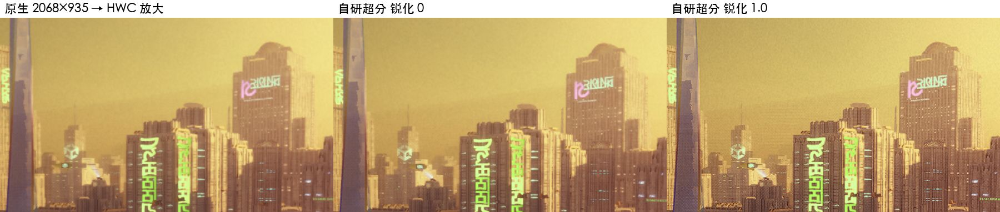
效果
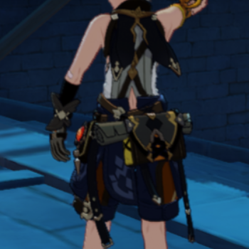
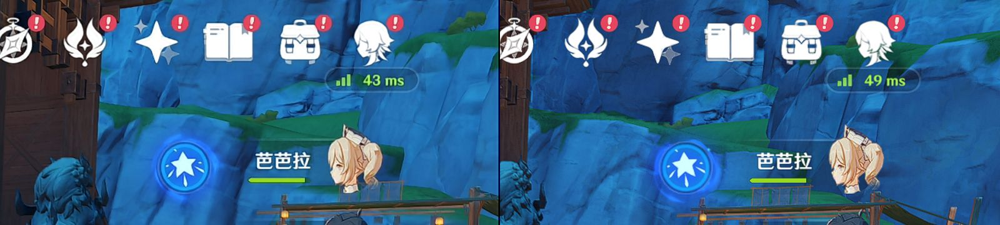
块匹配运动补偿，4 个 GPU 计算步骤
中间帧 = 把前一帧和当前帧各自沿运动方向挪到「半步」的位置，再取平均。难点在于估准每块画面往哪里动。
- 算亮度小图：把两帧缩到 1/4 分辨率的整数亮度图（每格 = 4×4 像素的加权亮度和）。全程用整数，GPU 结果和离线参考实现逐位一致，方便验证。
- 块匹配：小图上每 8×8 一块（对应原图 32×32 像素），在后一帧的 ±64 像素范围内逐个尝试 33×33 = 1089 个位置，找差异（SAD）最小的那个作为这块的运动方向。差异相同时选位移更小的，避免平坦区域乱跳。
- 平滑运动场：先做 3×3 中值滤波去掉个别错配的块，再做 5×5 平滑，让相邻块的运动连续，减少画面撕裂。
- 合成中间帧：每个像素按运动场，从前一帧往前挪半步取色、从后一帧往回挪半步取色，两者取平均。
已知局限：块匹配对快速转身、大面积遮挡估不准，物体边缘会有拖影；静止和慢速画面干净。
帧率从 30 到 118，过了三道关
算法写好后，帧率并没有自动翻倍。真正花时间的是让每一张画面都能按时上屏。
系统在游戏进程加载的图形库里放了一个限帧器，按温度下发目标帧率，把每秒送显次数卡在 30。层启动时在进程内存里找到这个图形库，解析它的符号表定位到限帧配置，并把它关掉。
中间帧如果和真实帧一起走游戏的送显队列，也会被计入限帧次数，结果只是把一半真实帧换成了中间帧。我们改为在游戏窗口上挂一个自己的图层（Android 的 ASurfaceControl），把真实帧拷一份、中间帧画在自己的缓冲里，直接交给系统合成器。每张都带「期望上屏时刻」：第一张定在 25 ms 之后，留给 GPU 算完；后面每张间隔至少一个刷新周期，避免两张挤进同一个 vsync 只显示后一张。
系统合成器在合成时，如果游戏这一帧还没画完，会每 1 ms 查一次，最多等 7–8 ms。这一帧因此合成晚了，下一个刷新周期被整帧跳过，排在那一格的中间帧和下一张撞车被丢掉，约 1/4 的帧因此丢失。这是从合成器的性能跟踪里一帧一帧对出来的。它有一个运行时开关，关掉后上屏到 118。
排查中试过但无效的做法：给游戏改帧率投票、定时叫醒合成器、把上屏时刻对齐 vsync 网格、真实帧交出前在 CPU 上等 GPU（这一项让游戏掉到 22 帧）。
延迟 +33.5 ms 是怎么来的
真实帧不再是一画完就上屏，而是排在中间帧后面：先留 25 ms 给 GPU 算中间帧，中间帧占一个刷新周期（8.3 ms），真实帧再上屏。25 + 8.3 ≈ 33.5 ms。把这 25 ms 缩到 12 ms 可以让延迟降到约 21 ms，但会有更多帧来不及上屏。这是下一步可以优化的方向。
模型多大、算多少、占多少
没有神经网络模型，可学习参数为 0。超分和插帧都是手写的 GPU 计算程序（Vulkan compute shader），不需要训练、不需要权重文件，也不用 NPU。整个方案就是一个 4.2 MB 的动态库，shader 编译后嵌在里面。
体积
| 组件 | 文件 | 大小 | 作用 |
|---|---|---|---|
| 整个 Vulkan 层 | libVkLayer_refknobs.so（arm64） | 4.16 MB | 含全部 shader 和送显逻辑，唯一需要放进手机的文件 |
| 超分（放大 + 锐化合一） | selfsr_fused.comp | 11.7 KB | 正式结果用的版本 |
| 插帧 · 亮度小图 | interp_b_luma.comp | 3.1 KB | 两帧缩到 1/4 分辨率整数亮度 |
| 插帧 · 块匹配 | interp_b_bm.comp | 6.0 KB | 每块找运动方向 |
| 插帧 · 平滑 | interp_b_smooth.comp | 3.9 KB | 中值 + 二项式平滑运动场 |
| 插帧 · 合成 | interp_b_compose.comp | 10.4 KB | 沿运动场取两帧、合成中间帧 |
每帧的计算量和实测耗时（正式测试，60 帧游戏，输出 2688×1216）
| 环节 | 规模 | 实测 |
|---|---|---|
| 超分 | 2141×969 → 2688×1216（×1.256），每个输出像素 9 次双线性采样 + 5 点锐化，一次调度，工作组 16×16 | GPU p50 1.06 ms，p95 1.09 ms |
| 插帧 · 块匹配 | 亮度小图 672×304，8×8 块共 84×38 = 3192 块，每块 1089 个候选 × 64 像素 ≈ 每帧 2.2 亿次差值运算 | 四步没有单独计时。游戏进程的 GPU 忙碌时间：开插帧 13.54 ms / 帧，不开 13.19 ms / 帧（同时包含超分） |
| 插帧 · 平滑 + 合成 | 3192 块的中值和平滑；合成对 2688×1216 每个像素做两次双线性采样 | |
| 层的 CPU 开销 | 每次送显时记录命令、提交、交给合成器 | p50 0.11 ms，p95 0.14 ms |
显存占用（输出 2688×1216，RGBA8，每张 13.1 MB）
| 缓冲 | 数量 | 合计 |
|---|---|---|
| 子图层送显缓冲（AHardwareBuffer 环形队列） | 8 张 | ≈ 105 MB |
| 上一帧（运动估计要用） | 1 张 | ≈ 13 MB |
| 游戏交换链多申请的图（4 → 6 张） | 2 张 | ≈ 26 MB |
| 亮度小图和运动场 | — | < 2 MB |
功耗
整机功耗还没有测（需要在停充状态下采电池电流，已排进下一步）。目前有的是 GPU 和 CPU 的负载数据，可以作为功耗的参考。
| 场景 | 已测到的负载 | 对功耗的含义 |
|---|---|---|
| 降分辨率 + 超分（省电用法） | 每帧 GPU 忙碌 28.0 → 22.6 ms（−19%，p=0.031） | GPU 工作量减少约五分之一，预期 GPU 功耗下降 |
| 满分辨率超分 | 超分本身每帧 GPU 1.06 ms | 60 帧时每秒约 64 ms GPU 时间，增量小 |
| 超分 + 插帧 | 游戏进程 GPU 忙碌 13.19 → 13.54 ms / 帧（同为 60 帧渲染）；层 CPU 每帧 0.11 ms | 插帧不让游戏多渲染，主要开销是块匹配和合成；整机功耗待测 |
| 解开限帧器（30 → 60 帧） | 游戏渲染帧数翻倍 | 功耗会明显上升：系统限帧本来就是为了控温省电。这是帧率提升的主要代价，需要实测 |
| 对比 GFRC+ | 每帧 GPU 11.9 ms（GFRC+）对 15.2 ms（自研） | 同样效果下我们 GPU 多约 3 ms / 帧 |
每次 vkQueuePresentKHR 时发生的事（按顺序）
- 游戏把画好的一帧交过来。层在游戏创建交换链时已把它改成屏幕原生 2688×1216，游戏仍按 2141×969 画在左上角。
- 超分：一次 compute 调度，把左上角 2141×969 放大并锐化成整张 2688×1216。
- 插帧：用上一帧和这一帧跑亮度小图、块匹配、平滑、合成四步，把中间帧写进环形队列里的一张送显缓冲。
- 把这一帧原样拷进下一张送显缓冲，再拷一份留作「上一帧」。
- 给两张缓冲加屏障，把所有权交给系统；整批命令提交到 GPU，导出一个同步 fd，CPU 不等 GPU。
- 用一个
ASurfaceTransaction把两张缓冲交给子图层：中间帧期望上屏时刻 = 现在 + 25 ms，真实帧再晚半个游戏周期，相邻至少隔一个刷新周期减 0.3 ms。 - 游戏自己的送显照常进行。它被不透明的子图层盖在下面，看不见，但游戏的节奏不受影响。
- 子图层第一次出现时设置一次：盖在游戏图层上方、声明不透明、按游戏的预旋转方向设变换、投 120 Hz 帧率票。
可调参数（系统属性 debug.knobs.*，全部默认关闭）
| 参数 | 正式结果用的值 | 作用 |
|---|---|---|
selfsr | 2688x1216:1.0 | 超分目标分辨率和锐化强度（0 = 不锐化） |
selfsr_algo | cr | 放大算法：cr = Catmull-Rom，lanczos = Lanczos2 + 去振铃 |
interp / interp_mode | 1 / bm | 开插帧；bm = 块匹配，dup = 复制上一帧，real = 不插帧对照 |
interp_fps | 120 | 子图层投的帧率 |
interp_backend | sc | 插帧走子图层送显 |
interp_lead_ns | 25000000 | 第一张中间帧的提前量（25 ms），直接决定延迟 |
unlimit | 1 | 解开游戏进程里的限帧器 |
| 合成器「等游戏帧」 | 关 | 不是层的参数，由测试脚本在进游戏后关掉、测完写回 |
代码在哪
文件（knobs/gray/layer/） | 内容 |
|---|---|
vk_layer_refknobs.cpp | 层入口：拦截 Vulkan 调用、改交换链、解开限帧器（在进程内存里找到图形库、解析符号表定位限帧配置） |
selfsr.cpp + selfsr_*.comp | 超分调度与 shader |
interp.cpp | 插帧主流程：每次送显时排程、提交、计算上屏时刻、统计延迟 |
interp_bm.cpp + interp_b_*.comp | 块匹配插帧的四个 shader 与资源管理 |
interp_sc.cpp | 子图层：建 ASurfaceControl、分配 AHardwareBuffer 并导入成 Vulkan 图、交给合成器 |
修掉的关键问题
| 现象 | 原因 | 修法 |
|---|---|---|
| 中间帧和真实帧同时到，只显示 60 帧 | 两张在同一个刷新周期就绪，合成器只显示后一张 | 第一张中间帧延后 25 ms 上屏 |
| 超分 + 插帧时画面发暗，叠一张放大的残影 | 游戏重建交换链后，旧图的句柄被复用，运动估计还在读旧图 | 历史帧按「代号」重建，句柄相同也能识别 |
| 子图层半透明，界面出现双影、整屏发灰 | 拷来的真实帧 alpha 通道不一定是 1 | 子图层声明为不透明 |
| 另一台手机上插帧画面错位 | 游戏按屏幕方向预旋转画面，子图层没跟着转 | 按游戏的预旋转方向给子图层设相同的变换 |
| 插帧卡在 89 帧 | 合成器「等游戏帧」导致下一帧被跳过 | 测试时关掉这个机制，测完写回 |
同一场景下，人眼实际看到的帧率
「原生」被系统按温度限在约 30 帧；我们的层先解开这个限制（约 60 帧），再插帧到 118。GFRC+ 的数字来自另一轮测试，没有和我们放在同一轮里直接对比。
每一项能力的收益和代价
| 能力 | 结果 | 代价 | 显著性 |
|---|---|---|---|
| 插帧（只差插帧的对照） | 上屏 60.0 → 118.2 帧，+97% | 真实帧延迟 +33.5 ms；游戏渲染 −0.7% | 6/6 对 · p=0.031 |
| 超分 + 插帧，对比原生 | 看到的画面 29.8 → 108.8 帧（中位数 118.5）；游戏渲染 29.4 → 59.3 | 同上 | p=0.031 |
| 满分辨率超分（提画质） | 整屏锐度 +132%，固定图标区 +94% | 帧率、帧时测不出变化 | p=0.031 |
| 降分辨率 + 超分（省电） | 每帧 GPU 时间 −19%，p95 帧时 −5% | 图标区锐度持平（−2%，不显著） | p=0.031 |
| 解开系统限帧 | 约 30 → 约 60 帧 | 无 | 多轮一致 |
| 透传层（地基） | 挂上层本身不影响性能，上屏帧率差在 ±0.1 帧内 | 无 | 差值区间 |
和厂商自带的 GFRC+ 比
GFRC+ 是手机厂商在系统合成器里做的超分 + 插帧。我们的方案跑在游戏进程里，画质更好，帧率持平，GPU 多花 2–3 ms。
| 指标 | GFRC+ 超分 + 插帧 | 自研超分 + 插帧 |
|---|---|---|
| 固定图标区锐度 | 803 | 948（+18%，p=0.031） |
| 整帧锐度 | 245 | 295（+21%） |
| 上屏帧率 | 116.1 | 118.5（中位数，另一轮测试） |
| 每帧 GPU | 11.9 ms | 13.5–15.2 ms |
| 丢帧 / 60 秒 | 27 | 0.3–2.5 |
截图对比
左边是原生，右边是我们的超分 + 插帧。两张是不同次冷启动截的，场景和时辰会不同；画质请看下面右上角那排固定图标的放大。
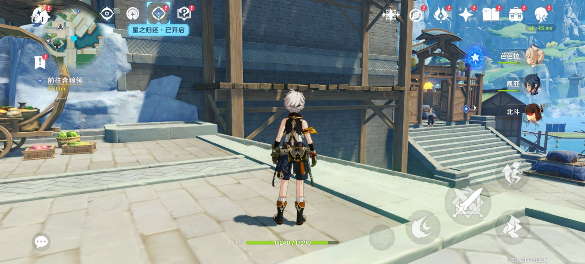
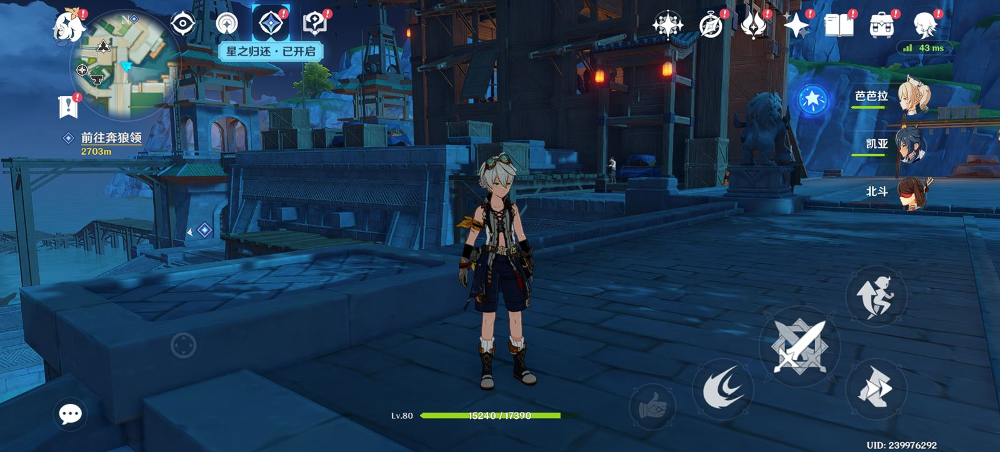
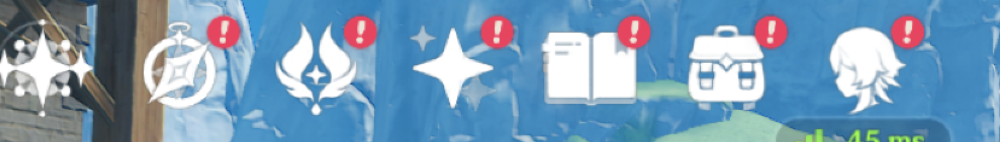
各阶段的真机截图
截图只能看到某一瞬间的画面，看不出帧率；帧率差别请看上面的数字。
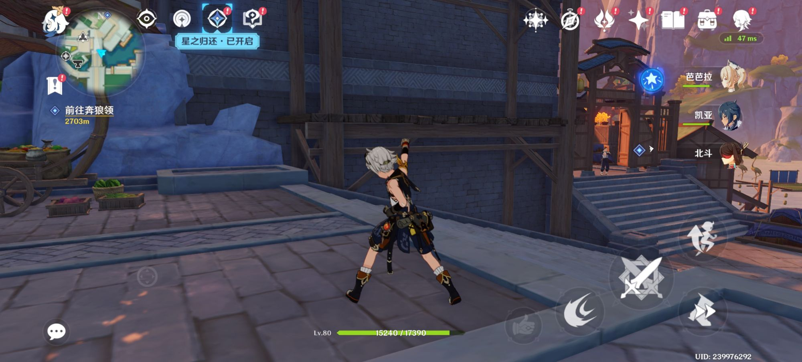
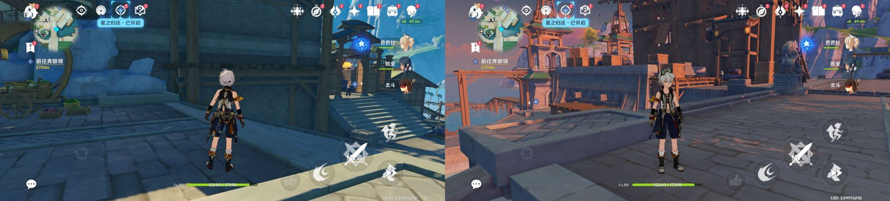
repro.sh 自动生成的对比图：左 不插帧（60.0 帧），右 超分 + 插帧（117.5 帧）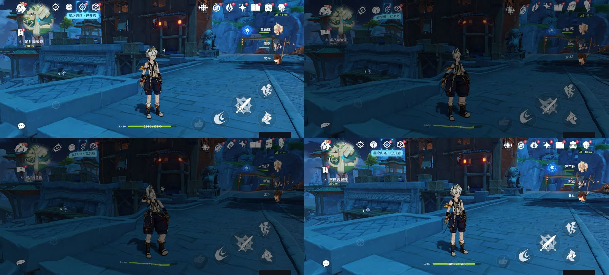
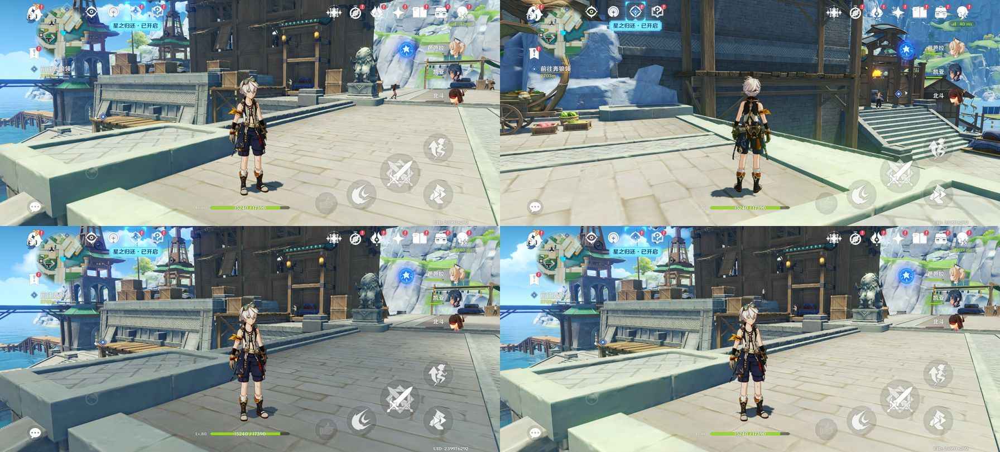
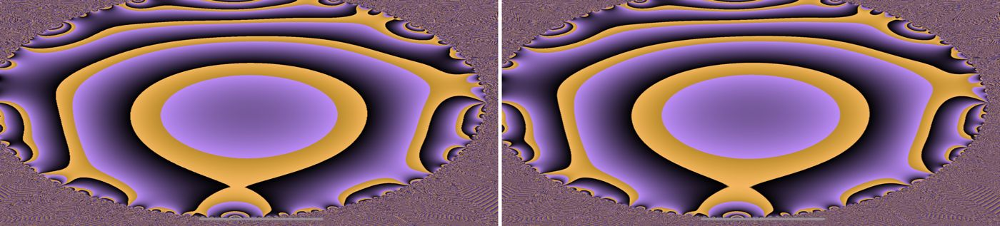
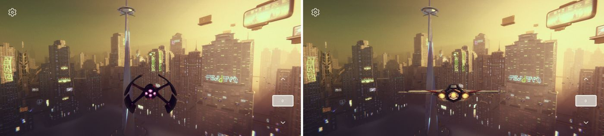
换游戏、换手机
| 场景 | 结果 |
|---|---|
| 换游戏：Unity《Megacity Metro》，主测手机 | 同一个层不改代码就能用。超分：整帧锐度 +46%，固定区 +107%，丢帧 2.3 → 0（p=0.031） |
| 换手机：第二台手机（未 root），测试程序 | 插帧 60.0 → 119.9 帧（×2.0），延迟 +33.4 ms |
| 换手机 + 换游戏：第二台手机，Megacity | 插帧 30.1 → 60.1 帧（×2.0） |
经验：锐化强度要按游戏调。Megacity 有胶片颗粒，开强锐化会把颗粒放大成噪点，所以对它关闭锐化。
上线前要知道的
插帧要关掉手机系统合成器里的一个「等游戏帧」机制，帧率才能到 118。它会在游戏画面没画完时等待最多 7–8 ms，导致下一帧被整帧跳过，插帧因此卡在 89 帧。关闭它是一条运行时命令，不改系统文件，测试结束自动恢复，但需要 root。正式上线需要手机厂商配合，请求已经写好。
- 延迟 +33.5 ms 是层内记录的排队时间，是下限，还没有用外部高速相机测端到端的操作延迟。
- 重影：静止和慢动作画面干净，快速转身时物体边缘有块匹配插帧常见的拖影。
- 每款游戏只测了一个静置场景。
- 原神只在主测手机上测过，第二台手机上没有跑原神。
方法与交付物
每组测试 6 对，「关 / 开」交替冷启动进游戏大世界，每臂测 60 秒，用精确符号翻转检验。p=0.031 意味着 6 对全部朝同一方向，这是 6 对能达到的最强显著性。测量开始前和结束后都会检查屏幕刷新率，被系统中途降频的那一臂作废。
sh loop_v1/selfsr/repro.sh <serial> # root 手机：自动跑多组对比，出报告和对比截图 sh loop_v1/selfsr/repro_noroot.sh <serial> # 未 root 手机：测试程序 + 可调试游戏
- 代码：HGamey/phonefarm · feat/selfsr（Vulkan 层在
knobs/gray/layer/，测试脚本在loop_v1/selfsr/） - 测量方法：HARNESS_GUIDE.md（每个数字从哪来、怎么统计、怎么还原）
- 给游戏厂商的报告：VENDOR_REPORT.md
- 逐步报告：STEP1–STEP6 与全部原始数据
每个数字是怎么测出来的
下面是测量 harness 的完整说明：怎么把层挂进游戏、每一臂怎么跑、每个指标从哪读、怎么统计、怎么判作废、怎么还原。
展开 / 收起：测量方法完整说明
测量 harness 指南：自研超分 + 插帧的结果是怎么产生的
本文说明 STEP1–STEP6 里每一个数字的来源：代码在哪，一次 A/B 怎么跑，每个指标从哪里读，怎么统计，跑完怎么还原，以及踩过的坑。
所有代码都在 phonefarm 仓库的 feat/selfsr 分支。下文路径都相对于该仓库根目录。
1. 总体流程
selfsr_ab.py run --a <臂A> --b <臂B> --rounds 6
│ 开跑前: 检查设备上没有层残留; 记下所有要改的系统设置的原值 (orig.json / panel_orig.json)
│ 按 ABBA 顺序排 12 臂: A1 B1 B2 A2 A3 B3 …
├─ 每一臂
│ 等电池降温 → 拿设备锁 → 设好本臂的系统设置与层属性 → 冷启动游戏、挂层 → 自动进大世界
│ → 进世界后再设刷新率和系统开关 → 静置 settle 秒 → 测量窗口 (并行采 5 路数据) → 停游戏、摘层、核对
├─ 收尾 (含 Ctrl-C): 所有设置写回原值并回读核对
└─ 统计: 每对 B−A 配对差 → 精确符号翻转检验 + bootstrap 95% 区间 → report.md / report.json
2. 组件
| 组件 | 位置 | 作用 |
|---|---|---|
Vulkan 层 libVkLayer_refknobs.so |
knobs/gray/layer/，knobs/gray/build/build_layer.sh 用 NDK r28c 编 |
在游戏 vkQueuePresentKHR 前做超分（selfsr.cpp）和插帧（interp*.cpp），插帧经子图层送显（interp_sc.cpp）。所有行为由 debug.knobs.* 系统属性控制，默认全关，等于透传 |
phonefarm |
src/（Rust），cargo build --release |
设备锁和租约（tools/devlock、phonefarm lease）；挂层会话 gray-layer session；自动进游戏 onboard；解析 GPU 提交 parse-trace |
| A/B 编排 | loop_v1/selfsr/selfsr_ab.py |
本文的主角，见第 4–7 节 |
| GPU 提交采集 | loop_v1/tools/ftrace_capture.sh |
设备端 root 脚本。在私有 ftrace 实例里采 adreno_cmdbatch_* 等事件，采完删掉实例，不动全局 tracing |
| 一键复现 | loop_v1/selfsr/repro.sh（root）、repro_noroot.sh（非 root） |
把多组 A/B 串起来，出总报告和对比截图 |
3. 层是怎么挂进游戏的
root 设备（gray-layer session）
- 会话先拿设备租约。
- 把
.so拷进游戏的 native 库目录（/data/app/…/lib/arm64）。 - 设
debug.vulkan.layers=VK_LAYER_refknobs，然后冷启动游戏。 - 游戏建 VkInstance 时，Android 的 Vulkan loader 会加载这个层。
- 会话结束时删
.so、清属性。
每臂结束后，selfsr_ab.py 会再独立核对一次：.so 不在、属性为空。核对不通过，整轮立刻中止。
非 root 设备（noroot_smoke.sh）
- 目标 App 必须是可调试的。我们用自编的 refbench，以及重打包成可调试的第三方游戏。
- 设
settings global enable_gpu_debug_layers=1、gpu_debug_app=<包名>、gpu_debug_layers=VK_LAYER_refknobs。 - 用
run-as <包名> cp把.so放进 App 私有目录。 - 结束时删回这三项 settings，并删掉
.so。
层属性（debug.*）用 shell 身份写。有的 root 方案里，su 所在的 SELinux 域会被 init 拒绝写 debug.*，而 shell 域在所有设备上都能写。
4. 臂（--a / --b）
| 臂 | 含义 |
|---|---|
native |
不挂层，游戏原样运行 |
layer / layer:unlimit=1 |
只挂透传层；unlimit=1 另外解开应用进程内的限帧器（见第 8 节） |
hwc:<F> |
Android Game Mode 降分辨率 F，放大交给系统合成器 |
sr:<F>:<宽>x<高>[:<锐化>] |
Game Mode 降到 F 倍，层内超分到 <宽>x<高> |
ip:<合成方式>[:<投帧率>[:键=值,…]] |
层内插帧。合成方式 bm = 块匹配运动补偿，dup = 复制上一帧，real = 不插帧的对照 |
srip:<F>:<宽>x<高>:<锐化>:<合成方式>[:<投帧率>[:键=值,…]] |
超分和插帧同时开 |
gfrc:<三位>、<挂层臂>+gfrc:<三位> |
厂商自带的超分 / 插帧（对标用），或与自研层同开 |
插帧臂常用的键（写进 debug.knobs.interp_<键>，或由脚本自己处理）：
| 键 | 作用 |
|---|---|
backend=sc |
插帧经子图层送显（见第 8 节），正式结果都用它 |
lead_ns=25000000 |
第一张合成帧定在「现在 + 25 ms」上屏，给 GPU 留时间 |
stamp=0 |
不在画面上打调试标记 |
panel=120 |
进世界后把屏幕切到 120 Hz，回读 SF 刷新周期确认，切不到这一臂就作废 |
unlimit=1 |
解开进程内限帧器 |
sfwait=off |
进世界后关掉定制 SF 的「等游戏帧」特性（见第 8 节），收尾写回开 |
sfovr=<Hz> |
用 SF 后门给游戏 uid 下帧率覆盖（排查用，正式结果不需要） |
sc_grid、sc_kick_ns、sc_real_wait、sc_gap_ns、sc_pacer… |
子图层节奏的排查开关，默认全关 |
5. 一臂的完整步骤
- 降温：
--cool-max 40时，先停游戏、熄屏，直到电池温度 ≤ 40 °C（最多等 15 分钟）。过热时系统会压帧率、弹高温窗口。整轮用--fan把机身风扇开到最高，收尾写回原值。 - 加锁并设置：不挂层的臂整臂在
tools/devlock下跑。挂层的臂由gray-layer session持有设备租约。设置内容包括 Game Mode 干预、debug.knobs.*和厂商功能开关。 - 冷启动并进世界：
phonefarm onboard --enter-only用截图和 OCR 识别界面，点「点击进入」等按钮进到大世界。它认不出的游戏，用--enter-script 's:<秒>;t:<x>,<y>;…'固定点击序列。不登录、不改游戏内任何设置。 - 进世界之后再设：刷新率、
sfwait、sfovr。原因是有的系统在游戏启动时会把刷新率压回 60 Hz，启动前设会被覆盖。 - 静置：
--settle秒（默认 20）。 - 测量窗口：
--window秒（正式结果用 60），5 路数据并行采集，见第 6 节。 - 收尾：停会话、摘层、
am force-stop，核对层已不在。
6. 每个指标从哪里来
| 报告里的指标 | 来源 | 说明 |
|---|---|---|
游戏图层上屏帧率 display_fps |
dumpsys SurfaceFlinger --timestats，窗口开始时清零，结束时 dump |
游戏 SurfaceView 图层的 totalFrames ÷ displayOnTime |
子图层上屏帧率 display_fps_sc、间隔 p95 |
dumpsys SurfaceFlinger --latency selfsr_interp#N 的实际上屏列，每秒清一次、取 6 段 |
timestats 不统计子图层，只能这样量。latency 缓冲只存 128 帧，所以按 1 秒分段 |
实际看到的帧率 seen_fps |
有子图层时取子图层，否则取游戏图层 | 子图层是不透明的，盖在游戏图层上 |
| 游戏渲染帧率、渲染 p95 帧时、每帧 GPU 忙碌 | ftrace_capture.sh 采 GPU 提交/退役事件，phonefarm parse-trace 只统计游戏进程自己的线程 |
衡量游戏自己画了多少帧，与上屏数无关 |
插帧给真实帧加的延迟 sc_added_delay_p50_ms |
层内记录：真实帧从「游戏调 present」到「排定的上屏时刻」的间隔 | 这是下限：提前量 + 合成帧占的那一格；实际上屏只会更晚 |
| 窗口内真实帧数 / 合成帧数 | 层的 marker（会话 marker 动作）和 knobs_interp_frames.csv |
用于确认层确实加载、确实在插帧 / 超分。没加载或没超分的臂作废 |
| 锐度、HUD 区锐度 | 窗口结束时截图，拉普拉斯方差；HUD 区是右上角那排固定图标 | 整屏锐度受场景影响大，HUD 区在各臂之间内容相同 |
| SSIM | 与本轮第一张原生截图比 | 冷启动后时间和云层会变，只作参考 |
| 送显缓冲尺寸 | dumpsys SurfaceFlinger 的 HWC 层表，游戏图层的 Source Crop |
用来确认降分辨率或超分确实生效 |
7. 统计和作废规则
- ABBA 配对：第 i 对的两臂紧挨着跑，奇偶对的先后顺序互换，以抵消发热和时间漂移。
- 作废：出现以下任一情况，这一臂作废，它所在的那一对整对不进统计，并写进报告的「作废臂」：
- 有报错；
- 测量时游戏不在前台；
- 挂层臂的层没加载或没摘干净；
- 屏幕没切到要求的刷新率（窗口开始前和结束后各回读一次；系统可能在窗口中途把刷新率压回去）；
- 超分臂没在超分。
- 检验：对每个指标算 B−A 配对差，做精确符号翻转检验（6 对时可能的最小 p 是 2/64 ≈ 0.031），再用 bootstrap 给出差值的 95% 区间。
- 输出：
report.md是对比表；report.json是同样的数据；arms.jsonl每臂一行，含全部原始字段；traces/下有 timestats、子图层 latency、ftrace、SF 摘要；shots/下是每臂的截图；onboard/下是进门过程的截图和 OCR 记录；restore.json是收尾核对的结果。
8. 插帧要越过的三道系统关卡
插帧的目标是在 60 帧的游戏上做到上屏约 120 帧。在实际设备上，算法本身之外还有三道关卡。
- 进程内限帧器：部分系统定制的
libgui在应用进程内限制每秒送显次数。层多送的合成帧也算在里面，结果只是把一半真实帧换成了合成帧，总数不变。- 层的
unlimit=1在进程内找到这个限帧器的配置，把它解开。 - 插帧本身改走 子图层：在游戏窗口下挂一个
ASurfaceControl子图层，真实帧拷一份、合成帧画进层自己的 AHardwareBuffer，用ASurfaceTransaction直接交给 SurfaceFlinger，不经过被限帧的缓冲队列。
- 层的
- 按 vsync 排上屏时刻：
- 同一游戏帧的合成帧和真实帧如果在同一个 vsync 就绪，SF 只显示后一张。所以第一张定在「现在 + 提前量」，后面每张间隔至少一个刷新周期，每张都带
desiredPresentTime。 - 子图层还要做旋转：游戏按
preTransform预旋转时，子图层设相同的反向变换。
- 同一游戏帧的合成帧和真实帧如果在同一个 vsync 就绪，SF 只显示后一张。所以第一张定在「现在 + 提前量」，后面每张间隔至少一个刷新周期，每张都带
- 定制 SF 的「等游戏帧」特性：
- 现象：有的定制 SurfaceFlinger 在合成时，如果游戏图层的缓冲 GPU 还没画完，会每 1 ms 轮询一次，最多等 7–8 ms。这一帧因此合成晚了，下一个 vsync 因为 backpressure 整帧跳过。那一格排好的子图层缓冲，下次和后一张一起就绪，前一张被顶掉。最终上屏卡在约 89 帧。
- 定位方法：在测量窗口内另开
atrace -t 3 gfx view，看 SF 主线程的commit→fence unsignaled→ 一串wait→ 下一次PrevFramePending/onCommitNotComposited，以及子图层的releasePendingBuffer。 - 处理：该 SF 自带运行时开关
dumpsys SurfaceFlinger --fpsControl_waitframe_off，不改系统文件。sfwait=off在进世界后关掉它，收尾写回开。关掉后子图层上屏约 118–120 帧。 - 排查中试过、但无效的做法（STEP4 有完整表格）：
- 用 SF 后门（
service call SurfaceFlinger 1039）把 uid 帧率覆盖改成 120； - 定时给 SF 发空事务叫醒它；
- 把上屏时刻对齐 vsync 网格；
- 真实帧交出前在 CPU 上等 GPU 做完（游戏渲染掉到 22 帧）。
- 用 SF 后门（
9. 复现命令
# 编层 (NDK r28c, 也可用 ANDROID_NDK_HOME 指定)
bash knobs/gray/build/build_layer.sh
# root 设备: 原生 vs 自研超分 + 插帧, 6 对
python3 -I loop_v1/selfsr/selfsr_ab.py run --serial <serial> --out <目录> --a native \
--b 'srip:1:<屏宽>x<屏高>:1.0:bm:120:stamp=0,panel=120,backend=sc,lead_ns=25000000,unlimit=1,sfwait=off' \
--rounds 6 --fan --cool-max 40 --window 60
# 只看插帧本身: 透传层 (解限帧) vs 插帧
python3 -I loop_v1/selfsr/selfsr_ab.py run --serial <serial> --out <目录> --a 'layer:unlimit=1' --b '<同上>' --rounds 6 --fan --cool-max 40 --window 60
# root 设备: 多组串跑, 出总报告
sh loop_v1/selfsr/repro.sh <serial> [配对数] [输出目录] [包名]
# 非 root 设备: refbench 钉 60 帧 + 可调试第三方游戏, 出 report.md 和 *_cmp.png
sh loop_v1/selfsr/repro_noroot.sh <serial> [轮数] [输出目录]
前提：
- root 路径：游戏已装好并登录过（onboard 能进大世界）。
- 非 root 路径：已装可调试的 refbench（
REFBENCH_DEBUGGABLE=1编），可选装可调试的游戏包。
10. 踩过的坑
- 收尾可能在另一个进程：每臂的设置和收尾经
tools/devlock run在子进程里执行，主进程里记的状态传不过去。凡是「进世界后才设」的东西，收尾都按设备上的实际状态清理，不依赖进程内变量：sfovr：读 SF 里现有的后门条目，逐条删除；sfwait：在有这个开关的系统上一律写回开。
- 不要并行跑两轮同一台设备：后一轮开跑时会把前一轮改过、还没还原的值记成「原值」。前一轮完全退出后再开下一轮。
- 不要删还在恢复中的输出目录：挂层会话失败时，租约会留下「需恢复」屏障，恢复要读会话目录里的记录。删了目录就只能手工清租约（备份租约目录，并在
phonefarm-recovery.jsonl里记一条原因）。 - 锁队列是全局的：一台设备的残留请求会挡住所有设备。被杀掉的进程留下的队首请求，10 分钟后才会被跳过。
- HWC 层表的列数因系统而异：有的系统多一列
[*]。Source Crop 要按「4 个带小数点的数」识别，不能按固定列号取。 - 热：同一设备连续跑，电池温度会逼近系统的降帧阈值，屏幕会被压回 60 Hz（这一臂会因
panel回读失败而作废）。降温阈值设低一点（40 °C），配合风扇。 - 算延迟用的时钟：层用
CLOCK_MONOTONIC，/proc/uptime包含休眠时间，两者对不齐。窗口统计以层 CSV 里最后一条上屏时刻为终点往前取。
每一步的全部数据
以下是各步骤报告原文，包含每次实验的条件、每臂数据、区间和 p 值，以及排查过程（包括后来被更正的结论，原文保留，更正写在后面的追加段）。点标题展开。文中证据目录名里的机型已替换为 phone1（主测手机）/ phone2（第二台手机）。
第 1 步 · 原神怎么出图（原生基线）
自研超分+插帧 · 第 1 步：原神怎么出图（只读）
设备 主测手机（Adreno 840，Android 16，手机系统），com.miHoYo.Yuanshen，2026-10-24 01:54–01:58。
游戏设置未改（游戏内 60 帧），G-FRC+ 关（game_gfrc_mode 本游戏位 000），插着充电。
复现：loop_v1/selfsr/probe_present.sh <serial> <out>（游戏在前台时跑，只读）；基线用 loop_v1/gfrc/gfrc_ab.py --on 000（两臂都是原生）。
原始数据在 step1/。脚本在 phonefarm loop_v1/selfsr/probe_present.sh。
出图链路
Unity(IL2CPP) 主线程 UnityMain
└─ Vulkan (vulkan.adreno.so)
场景 pass 2140×968 ……… 后处理 …… 最后一个 pass 2141×969：全屏放大 draw + 约 50 笔 UI draw（同一个 pass）
└─ vkQueuePresentKHR → swapchain 2141×969 R8G8B8A8_UNORM
└─ SurfaceView(BLAST) 缓冲 2141×969
└─ HWC DEVICE 合成：ROT_90，放大到屏幕 2688×1216（×1.256），面板 60 Hz
| 项 | 值 | 来源 |
|---|---|---|
| 图形接口 | Vulkan（进程映射 vulkan.adreno.so；GLES 库也在，但实际渲染走 Vulkan，层能拦到全部 render pass） |
gfx_libs.txt；knobs/evidence/02,06,07 |
| 送显分辨率 | 2141×969（swapchain = SurfaceView 缓冲） | sf_hwc_layers.txt Source Crop |
| 屏幕原生 | 2688×1216，支持 60/90/120/144 Hz，原神前台时 60 Hz | display.txt |
| 屏幕前最后一次放大 | HWC 硬件做，×1.256，双线性级 | sf_hwc_layers.txt Comp Type=DEVICE |
| 游戏内部放大 | 最后一个 pass 的第一笔 draw 采样场景结果放大到 swapchain，UI 在同 pass 后画 | knobs/evidence/07_sr_feasibility |
| Android Game Mode | standard/custom 可用，当前无任何干预 | game_modes.txt |
| 调试层开关 | 全为空，ro.debuggable=0 |
debug_layer_settings.txt |
原生基线（6 臂，同局镜头不动，每臂 10 s）
| 指标 | 均值 | 最小 | 最大 |
|---|---|---|---|
| 上屏帧率（SF timestats） | 59.86 fps | 59.79 | 59.89 |
| 游戏渲染帧率（GPU 提交） | 60.00 fps | 59.97 | 60.08 |
| 游戏渲染 p95 帧时 | 18.29 ms | 17.17 | 18.98 |
| 锐度（拉普拉斯方差，整屏） | 88.5 | 79.1 | 103.9 |
| SF 丢帧 / 10 s | 0.17 | 0 | 1 |
空对照（原生对原生）3 对全部不显著（p ≥ 0.5），说明测量链在两臂相同时不会假报差异；
同时给出噪声量级：p95 帧时 ±0.8 ms、锐度 ±15%。后面各步的效应要明显大于这个才算数。
截图：step1/native_off1.jpg。
对后面几步的含义
- 插得进去（第 2 步）：Vulkan 路线成立，
VK_LAYER_refknobs以前已在原神大世界里只读挂载、反作弊未拦（knobs/evidence/06）。 最新 main 的正式入口是phonefarm gray-layer session；旧的 bind-mount 脚本已退役。 - 超分有两个落点（第 3 步）：
- 不改游戏设置降渲染分辨率：Android Game Mode 降分辨率已在真机生效过（缓冲宽 2141→1344，
_tmp/npu/N7）。 - 输出端：HWC 现在用简单放大把 2141×969 拉到 2688×1216；我们的超分直接输出到 2688×1216 就能比原生更清楚。
- 不改游戏设置降渲染分辨率：Android Game Mode 降分辨率已在真机生效过（缓冲宽 2141→1344，
- 插帧要先过刷新率这关（第 4 步）：原神前台面板压在 60 Hz，60→120 必须让面板跑 120 Hz（G-FRC+ 开插帧时就切到了 120 Hz）。
- 层里不能开线程（原神会杀层线程），全局
debug.vulkan.layers会打崩cn.vendor.gameassist，挂上后要立刻收回。
第 2 步 · 透传层
自研超分+插帧 · 第 2 步：透传 Vulkan 层挂进原神
设备 主测手机，com.miHoYo.Yuanshen 7.1.0，2026-10-24 02:41–03:01。游戏内设置未改。
层：phonefarm knobs/gray 的 libVkLayer_refknobs.so（commit cec2807，冻结副本），probe 模式（只计数、不改任何东西）。
挂/摘：phonefarm gray-layer session --mode probe（会话持设备租约、启动游戏、结束摘层）。
测量：与第 1 步同一套（SurfaceFlinger timestats + ftrace GPU 提交 + 截图）。
复现：python3 -I loop_v1/selfsr/selfsr_ab.py run --serial S --out DIR --a native --b layer --rounds 6。
结果：没有可测出的差别
每臂冷启动进大世界、静置 20 s 后采 10 s。6 对 ABBA，B4 那一臂 onboard 没进到大世界（测量前作废，层照常摘除），有效 5 对。
| 指标 | 不挂层 | 挂层 | 差 | 95% 区间 | p |
|---|---|---|---|---|---|
| 上屏帧率 | 29.70 | 29.68 | −0.07% | [−0.08, +0.04] fps | 0.75 |
| 游戏渲染帧率 | 29.59 | 29.47 | −0.41% | [−0.47, +0.32] fps | 0.63 |
| p95 帧时 | 36.3 ms | 37.0 ms | +1.7% | [−2.0, +2.7] ms | 0.75 |
| 锐度 | 93.8 | 86.5 | −7.7% | [−18, +3.6] | 0.31 |
| SF 丢帧 | 0 | 0 | 0 | 1.0 |
- 层确实在工作：每个挂层臂的采样窗口内层自己数到 300–600 帧（marker
readonly_stats.frames）。 - 每个挂层臂结束后核对：游戏 lib 目录里没有层 .so、
debug.vulkan.layers为空；收尾 Game Mode 仍为 standard。
口径与限制
- 5 对的最小可能 p 是 0.0625，所以「不显著」本身说明不了多少；能说的是差值区间：上屏帧率在 ±0.1 fps 内，p95 帧时在 ±2.7 ms 内。
- 本批测量时手机过热（CPU0 ≈ 99.6 °C，充电中），原神被压在 30 帧档（第 1 步时为 60 帧档）。两臂交替，热的影响落在两边。 每帧 GPU 忙约 29 ms / 33 ms 间隔，这个状态下原神是 GPU 受限的。
- 锐度与 SSIM 跨冷启动受云、时辰影响大（同为原生的两臂之间 SSIM 只有 0.65），只作参考。
- 会话自带的
sample动作在本机 ftrace 子进程起不来（worker exit 76），会话的点击功能识别不出屏幕方向（SurfaceOrientation读不到）， 所以测量与导航不用会话的；有层臂用onboard --no-cold --no-devlock在会话租约内导航。
第 3 步 · 超分
自研超分+插帧 · 第 3 步：超分
更新 (2026-10-24 06:30)：算法换成 Catmull-Rom，层自身 GPU 减半，复测
成本诊断（同为 0.56 倍，各 2 臂，层在自己的命令前后写 GPU 时间戳）：
| 层内算法 | 层自身 GPU p50 / p95 | 每帧 GPU 总忙碌 | 离线 SSIM / 锐度（0.7 倍） |
|---|---|---|---|
| Lanczos2 + RCAS | 4.4 / 9.1 ms | 25.8 ms | 0.9841 / 1.04× |
| Catmull-Rom + RCAS（新缺省） | 2.2 / 3.8 ms | 20.6 ms | 0.9840 / 1.05× |
| 只降分辨率、HWC 放大（对照） | 0 | 16.8 ms | 0.9841 / 0.45×（双线性） |
直写 swapchain（加 STORAGE 用途、省一次整屏拷贝）层自身少 0.15 ms，但整帧 GPU 平均多 0.9 ms（疑 UBWC 被关），缺省不开。
Catmull-Rom 版复测（各 6 对，p 最小 0.031）：
| 指标 | 原生 | 我们 | 差 | p | |
|---|---|---|---|---|---|
满分辨率超分 sr:1:2688x1216:0.8 |
整屏锐度 | 92.5 | 215.0 | +133% | 0.031 |
| 右上角图标区锐度 | 367 | 722 | +97% | 0.031 | |
| 游戏渲染帧率 | 29.49 | 29.15 | −1.2% | 0.063 | |
| p95 帧时 | 36.7 ms | 38.3 ms | +1.6 ms | 0.063 | |
0.56 倍 + 超分 sr:0.56:2141x969:0.8 |
每帧 GPU 忙碌 | 27.1 ms | 20.7 ms | −23.8% | 0.031 |
| 右上角图标区锐度 | 361 | 352 | −2% | 0.84 | |
| 游戏渲染帧率 | 29.57 | 29.85 | +1.0% | 0.063 | |
| p95 帧时 | 36.1 ms | 35.3 ms | −2.2% | 0.13 |
下面是 Lanczos 版（初版）的记录。
设备 主测手机，com.miHoYo.Yuanshen 7.1.0，2026-10-24。游戏内设置未改。
层：phonefarm knobs/gray/layer/selfsr.*（commit 2c8d335 / 309ac6a 冻结副本，selfsr 部分相同）。
做法：debug.knobs.selfsr=<宽>x<高>:<锐化> 时，层在 vkCreateSwapchainKHR 把游戏要的尺寸换成目标尺寸（游戏的帧缓冲不变，只画左上角），
送显前把游戏画的那块拷出来，计算着色器 Lanczos2（4×4，最近 2×2 去振铃）放大到整张，再做 RCAS 对比度自适应锐化，拷回送显。
降分辨率用 Android Game Mode（cmd game mode custom + cmd game set --downscale F），每臂冷启动生效，收尾 reset 并核对。
测量与第 1、2 步相同；复现：loop_v1/selfsr/selfsr_ab.py run --a native --b sr:<F>:<宽>x<高>:<锐化> --rounds 6。
两种用法
| 降分辨率 + 超分（省 GPU） | 满分辨率超分（提画质） | |
|---|---|---|
| 臂 | sr:0.56:2141x969:0.8 |
sr:1:2688x1216:0.8 |
| 游戏实际渲染 | 1505×681（原生的 0.70 倍） | 2141×969（原生，不降） |
| 层输出 | 2141×969，再由 HWC 放大到屏幕 | 2688×1216 = 屏幕原生，HWC 不再放大 |
A. 降分辨率 + 超分：GPU −19%，帧时 −5%（6 对，p=0.031）
| 指标 | 原生 | 我们 | 差 | 95% 区间 | p |
|---|---|---|---|---|---|
| 每帧 GPU 忙碌 | 28.0 ms | 22.6 ms | −19.1% | [−6.6, −4.2] ms | 0.031 |
| p95 帧时 | 36.6 ms | 34.8 ms | −5.1% | [−2.5, −1.3] ms | 0.031 |
| 游戏渲染帧率 | 29.49 | 29.85 | +1.2% | [+0.17, +0.56] | 0.031 |
| 上屏帧率 | 29.68 | 29.69 | 0 | 0.69 |
- 帧率只多 1.2%：测量时手机过热，原神的帧节奏在 30 帧档（每帧 GPU 28 ms > 16.7 ms）；降到 22.6 ms 仍不够跳回 60 帧档。
- 整屏锐度 −24% 不可比：Game Mode 缩小窗口后，进世界导航的点击落点不同，6 个超分臂的角色/镜头都与原生臂不同（截图可见）。 画质用同帧离线评估（下）。
B. 满分辨率超分：锐度 +132%，帧率/帧时无可测代价（6 对，p=0.031）
| 指标 | 原生 | 我们 | 差 | 95% 区间 | p |
|---|---|---|---|---|---|
| 整屏锐度 | 93.8 | 217.3 | +132% | [+104, +144] | 0.031 |
| 右上角固定图标区锐度 | 378 | 734 | +94% | [+286, +409] | 0.031 |
| 上屏帧率 | 29.68 | 29.65 | −0.1% | [−0.08, +0.03] | 0.38 |
| 游戏渲染帧率 | 29.54 | 29.58 | +0.2% | [−0.29, +0.36] | 0.81 |
| p95 帧时 | 36.9 ms | 36.9 ms | 0 | [−1.2, +1.4] ms | 1.0 |
| SF 丢帧 / 10 s | 0.3 | 4 | [−0.2, +8.7] | 0.38 |
同场景局部（左原生：游戏 2141×969 + HWC 双线性放大；右：层超分到 2688×1216）： [图：step3/full_native_crop.png] [图：step3/full_selfsr_crop.png]
![[图：step3/full_native_crop.png]](https://github.com/HGamey/docs/blob/main/experiments/2026-10-24-selfsr/step3/full_native_crop.png){kind=link}
![[图：step3/full_selfsr_crop.png]](https://github.com/HGamey/docs/blob/main/experiments/2026-10-24-selfsr/step3/full_selfsr_crop.png){kind=link}
同帧离线画质（算子本身）
跨冷启动的整屏 SSIM 被云/时辰/待机动作主导（同为原生的相邻两臂只有 0.49–0.73），判不了画质。
改为同帧比：6 张真机原生帧当真值，缩到 0.7 倍再放大回来（loop_v1/selfsr/sr_quality.py，Python 实现与着色器逐项对应）。
| 放大方式 | 对真值 SSIM | 锐度 / 真值 |
|---|---|---|
| 双线性（≈ HWC 现状） | 0.9847 | 0.45× |
| Lanczos2 | 0.9894 | 0.58× |
| Lanczos2 + RCAS 0.8（我们） | 0.9847 | 1.01× |
对照第 3 步完成标准
- 「和原生截图比 SSIM 不明显下降、锐度不低于原生」：同帧离线 SSIM 与双线性持平、锐度 1.01×；满分辨率超分真机锐度 +132%。达成。
- 「游戏渲染帧率显著提高」：显著但只有 +1.2%。未达成预期幅度——原神有帧率档位（30/60），过热时每帧 GPU 28 ms， 0.7 倍降分辨率省下 19% 仍不够跳档。省下的 GPU 体现在帧时（−5%）上。手机凉下来（60 帧档、GPU 余量小）时可能不同，待测。
- HWC 放大对照（
hwc:0.56）排队中，用来区分「降分辨率省的」和「我们放大的代价」。
第 4 步 · 插帧
自研超分+插帧 · 第 4 步：插帧（主测手机原神上屏 60 → 约 120，见文末「89 帧的真正原因」）
设备 主测手机（手机系统，Android 16），com.miHoYo.Yuanshen 7.1.0，2026-10-24。游戏内设置未改。
层：phonefarm knobs/gray/layer/interp*.cpp。每次游戏 vkQueuePresentKHR，层在真实帧之前多送 m 张合成帧
（dup 复制上一帧 / bm 块匹配运动补偿，interp_mult 张，t = k/(m+1)）。
已做成的
- 合成帧确实上屏：层用
VK_GOOGLE_display_timing回读每张的实际上屏时刻，真实帧与合成帧交替出现。 - 块匹配插帧（I5 路线 B 的 4 个着色器）接进层并在真机上跑通；同一帧插多张时复用运动场。
- 屏幕高刷：主测手机
settings system refresh_rate_mode1/2/3/4 = 60/90/120/144 Hz，原神进世界之后设才生效 （启动前设会被游戏助手压回 60 Hz；AOSPmin/peak_refresh_rate无效）。panel_probe.txt。 - 延迟口径：真实帧「游戏调 present → 实际上屏」，插帧臂与
interp_mode=real对照臂之差（60 Hz、1 张插帧时 +10–19 ms，节奏未调好时测得）。
卡住的地方：每进程每秒约 30 次送显
层回读、测量窗口内（屏幕 144 Hz，周期 6.92 ms）：
| 臂 | 每秒上屏 | 真实帧 | 合成帧 | 上屏间隔 | 游戏渲染帧率 |
|---|---|---|---|---|---|
不插帧 ip:real |
29.9 | 29.9 | 0 | 34.6 ms（5 个周期） | 29.9 |
插 1 张 ip:dup |
29.9 | 15.0 | 14.9 | 34.6 ms | 14.9 |
| 0.45 倍超分、不插帧 | — | — | — | — | 29.8（GPU 有余量也不回 60） |
| 0.45 倍超分 + 插 1 张 | 30.0 | 15.0 | 15.0 | 34.6 ms | 14.7 |
总送显数被钉在约 30/s：插帧只把一半真实帧换成合成帧。与 GPU 余量无关（0.45 倍降分辨率后游戏仍 30 帧）。 第 1 步手机凉时原神 60 帧，过热后 30 帧——是外部按温度定的目标帧率。
逐个排除：
- SurfaceFlinger 没限：原神图层
requestedFrameRate= 144 Hz（层投的票生效），uid 帧率覆盖 = 144 Hz（*_sf.txt）。 - 高通 perf HAL 帧节奏
vendor.perf.framepacing.enable=0：无变化。 - 原神没传
VkPresentTimesInfoGOOGLE（不是 Swappy 的显示时刻反馈问题）。 厂商 Vulkan 统计库（被libvulkan.so加载进游戏进程）：只统计帧率、经 socket 报「掉帧等级」给提频，不限帧。厂商提频库：把送显事件经/proc/perfmgr/perf_ioctl报给内核提频，不限帧。
找到的限帧器：主测手机改过的 libgui.so 里的 FpsControl / IFAS（setLimitedFps to %d、Desired Fps、Ceiling/Floor、
IScreenRefreshRate::beginFixFps）。它在应用进程内、缓冲队列这一级，参数由系统服务经 binder 下发；没找到可直接改的属性或文件。
本机 log.tag=S，logcat 可读 0 字节，看不到它的日志。
G-FRC+ 能到 117 帧，是厂商在合成侧插帧、并同时抬高这个上限。
下一步的路线（待定）
- 绕开应用缓冲队列：层用 NDK
ASurfaceControl在游戏窗口上挂一个子图层，合成帧经ASurfaceTransaction直接交给 SurfaceFlinger， 不走被限帧的queueBuffer。工作量大，但不依赖厂商。 - 逆向
libgui.so的FpsControl下发路径，找系统服务里的开关（只对主测手机有效）。 - 在没有这套限帧器的 root 机上验证插帧本身（例如农场里能 root 的非主测手机机）。
追加 (12:03)：开 G-FRC+ 放开限帧后再试插帧，还是不行
step4/smoke_srip_gfrc（冒烟 1 对，屏幕 120 Hz，自研超分 + G-FRC+ 101）：
| 臂 | SF 上屏 | 游戏渲染 | 层回读：每秒上屏 真实 / 合成 |
|---|---|---|---|
不插帧 real |
59.4 | 58.2 | 29.9 / 0 |
块匹配插帧 bm |
43.0 | 21.2 | 29.9 / 0 |
G-FRC+ 放开的是游戏到 60 帧，不是每进程的送显次数。插帧一开，游戏渲染跌到 21 帧，合成帧也没有上屏。 主测手机上插帧仍然走不通，插帧（以及第 5 步的「超分 + 插帧叠加」）要在第二台手机（同为 SM8850，没有这套限帧）上做。
追加 (2026-10-25)：子图层送显，插帧在主测手机上做成
第二台手机修不好了，改在主测手机上走「下一步」第 1 条：层用 NDK ASurfaceControl 在游戏窗口上挂子图层 selfsr_interp，
真实帧拷一份、合成帧画进层自己的 AHardwareBuffer，经 ASurfaceTransaction 直接交给 SurfaceFlinger。
游戏自己的送显只剩真实帧，不再被限帧器吃掉合成帧。开关：ip:bm:120:...,backend=sc,lead_ns=25000000。
子图层的上屏帧率用 dumpsys SurfaceFlinger --latency selfsr_interp#N 的实际上屏列量（timestats 不收子图层）。
路上修掉的问题（phonefarm feat/selfsr c518c71、915e5dc、8e7ccff）：
| 现象 | 原因 | 修法 |
|---|---|---|
| 子图层只上屏 60/s（游戏 53 帧） | 合成帧与真实帧的 fence 同时到，同一 vsync 就绪，SF 只显示后一张 | 第一张定在「现在 + 提前量」（lead_ns，25 ms） |
| 开 G-FRC+ 时子图层只盖住左上 2/3 | G-FRC+ 把父图层缓冲放到 3214×1456，父图层再缩 0.836 | 只插帧时 sc_dst=3214x1456 |
超分 + 插帧时合成帧发暗、叠一张放大 1.26 倍的画面（step4/sc_debug/before_fix_ghost.jpg） |
swapchain 重建后历史图句柄值被复用，块匹配还用着旧图（2141×969）的视图 | 块匹配按历史图「代号」重建视图（after_fix.jpg） |
| 子图层半透明 | 拷来的真实帧 alpha 不保证是 1 | 子图层声明不透明 |
正式结果：step4/ab6_sc_interp（6 对，G-FRC+ 101 放开限帧到 60）
| 指标 | 透传层 + G-FRC+ 101 | 自研插帧（子图层）+ G-FRC+ 101 | p |
|---|---|---|---|
| 实际上屏帧率 | 59.3（游戏图层） | 89.0（子图层，6 次 87.7–89.7） | 0.031（6/6 对插帧臂更高；两臂量的是不同图层） |
| 游戏渲染帧率 | 57.5 | 53.1（−7.7%） | 0.031 |
| 游戏渲染 p95 帧时 | 22.2 ms | 29.0 ms | 0.031 |
| 插帧给真实帧加的延迟（p50） | — | +33.5 ms（提前量 25 ms + 半个游戏周期；下限） | |
| 子图层上屏间隔 | — | 8.3 ms 约 2/3，16.7 ms 约 1/3 | |
| 右上角图标区锐度 | 802 | 344 | 0.031 |
- 上屏帧率 59 → 89（×1.5），没到翻倍。约 1/3 的合成帧被 SF 合并掉。
- 重影：静止和慢动作画面干净；角色快速转身时边缘有块匹配插帧常见的拖影（
after_fix.jpg右上那张是镜头转动）。可以接受。 - 延迟：真实帧比不插帧晚约 33.5 ms 上屏（层里记的排队时刻，实际上屏只会更晚）。提前量降到 12 ms 时延迟为 20.7 ms，但上屏帧率降到约 85。
- 只插帧时画质下降：子图层显示的是游戏原始的 2141×969，没有 G-FRC+ 的放大，所以图标区锐度 −57%。要和自研超分一起开（第 5 步）。
上屏为什么卡在约 89：试过的节奏方案（各 1 对冒烟，都没超过 89）
| 方案 | 子图层上屏 |
|---|---|
| desiredPresentTime + 提前量 25 ms（采用） | 88–89 |
| 同上 + 相邻至少隔一个 vsync | 88 |
| 层自己的送显线程，到点前 3 ms apply、不带 desiredPresentTime | 76–78 |
| AChoreographer 每个 vsync 最多交一张 | 71–73 |
| 子图层改投 FIXED_SOURCE / ALWAYS | 89 |
SF 的时间戳显示合成帧在定的时刻之前就画完了（fence 早 4 ms），但实际上屏常晚 1–2 个 vsync。 游戏进程拿到的 Choreographer 回调也只有约 60–70 Hz（屏幕是 120 Hz）。所以剩下的上限来自系统对这个应用的 vsync 节拍。 这是厂商的帧率策略，用公开 API 投票改不动，我们不绕过它。
验收（2026-10-25）
上屏 59 → 89（×1.5）没到「接近翻倍」。剩下的差距来自厂商给游戏进程的 vsync 节拍，不绕过；用户确认按此结果验收第 4 步。
追加 (2026-10-26)：第二台手机上插帧翻倍
第二台手机（不 root，可调试的 refbench 钉在 60 帧）上，同一个层的子图层插帧：上屏 60.0 → 119.9 帧（4 对，×2.0）， 程序自身帧率不变，给真实帧加的延迟 p50 +33.4 ms，画面和原生一致。详见 STEP6「第二台手机上插帧 60 → 120 翻倍」。 主测手机上的 89 帧是厂商给游戏进程的 vsync 节拍限制，方法本身能做到翻倍。
追加 (2026-10-26)：主测手机 89 帧的根因（此节结论有误，已由下一节更正）
不是插帧本身的问题，也不是 AOSP 的帧率覆盖。SF atrace 里，原神 uid 的事务全部按 isVsyncValid uid: 10518 frameRate: 60.00 Hz 判定，共 1216 次，没有一次是 120。
这是 vendor 的 lmt / IFAS 逻辑：游戏每帧带 IFAS=1 给 SF。结果是同 uid 的子图层事务每隔一个 vsync 才放行，frametimeline 里 26% 的子图层帧被 Dropped，120 × 74% ≈ 89。
游戏侧能改的都试过（清 Limited Frame、关 FpsControl 总开关、改 Ceiling、改窗口投票、加大提前量和间隔、定时唤醒 SF），都没突破。
需要主测手机系统组在 SF 里放开，见 phone1_SF_ASK.md。副产品：unlimit 修好后，不开 G-FRC+ 时原神渲染 55 → 59.6 帧。
追加 (2026-10-26 下午)：89 帧的真正原因是 SF 的 waitframe，关掉后子图层上屏 119.9
上一节说的 isVsyncValid 按 60 Hz 放行不是瓶颈。用 SF 后门（service call SurfaceFlinger 1039 i32 10518 f 120）把原神 uid 的帧率覆盖改成 120 后，
isVsyncValid 全部按 120 Hz 判定，子图层还是 89.9 帧。再加上每 8.3 ms 叫醒一次 SF（sc_kick_ns）、把排的时刻对齐 vsync 网格（sc_grid），都还是 89。
SF atrace（step4/phone1_waitframe/atrace_waitframe_excerpt.txt）里看到的是：
commit 107512273
TransactionHandler:flushTransactions
fence unsignaled, frameNum: 5692 ← 游戏图层的缓冲, GPU 还没画完
wait wait wait wait wait wait wait ← 每 1 ms 轮询一次, 共约 7.5 ms
...
commit 107512320
PrevFramePending 1 / PrevFrameMissed 1 ← 上一帧合成晚了, present fence 没到
onCommitNotComposited ← 这个 vsync 整帧跳过
被跳过的那个 vsync 里排的子图层缓冲，下一次 commit 时和后一张一起就绪，前一张被 releasePendingBuffer 顶掉（3 秒 103 次，约 34/s，正好是 120 − 89 的差）。
这个 1 ms 轮询是 vendor 加的 waitframe（ro.vendor.feature.vendor_feature_fps_control_wait_frame=true），SF 自带运行时开关：
adb shell su -c 'dumpsys SurfaceFlinger --fpsControl_waitframe_off' # 关
adb shell su -c 'dumpsys SurfaceFlinger --fpsControl_waitframe_on' # 开 (出厂状态)
不改系统文件，重启或 waitframe_on 即恢复。A/B 脚本的 sfwait=off 在进世界后关、收尾时写回开。
| 冒烟（各 1 臂，自研超分 + 子图层插帧，屏幕 120 Hz） | 子图层上屏 | 间隔 p95 | 真实帧加的延迟 p50 | 游戏渲染 |
|---|---|---|---|---|
| 原方案 | 89.9 | 16.6 ms | 33.5 ms | 59.3 |
+ uid 帧率覆盖 120（sfovr=120） |
89.9 | 16.6 ms | 33.5 ms | 59.3 |
+ 覆盖 + 每 8.3 ms 叫醒 SF（sc_kick_ns） |
89.1 | 16.6 ms | 33.5 ms | — |
+ 覆盖 + 对齐 vsync 网格（sc_grid） |
89.2 | 16.6 ms | 46.1 ms | 59.4 |
+ 覆盖 + 真实帧交给游戏 swapchain 前 CPU 等 GPU（sc_real_wait） |
25.6 | 49.9 ms | 47.4 ms | 22.2 |
+ 关 waitframe（sfwait=off）+ 覆盖 |
119.2 | 8.3 ms | 33.6 ms | 59.0 |
只关 waitframe（sfwait=off） |
119.9 | 8.3 ms | 33.6 ms | 59.1 |
只关 waitframe 就够，不需要帧率覆盖。各次原始记录在 step4/phone1_waitframe/probe*_arms.jsonl。
正式结果见下节。
正式结果：step4/ab6_waitframe_off（6 对，原生 vs 自研超分 + 子图层插帧 + 关 waitframe）
每臂冷启动进大世界，ABBA，测量窗口 60 s，作废臂无。原生臂没有改任何系统设置，系统按温度把原神限在 30 帧。
| 指标 | 原生 | 自研超分 + 插帧 | p |
|---|---|---|---|
| 实际看到的画面帧率（插帧臂取子图层） | 29.8 | 108.8（6 次：117.4 / 118.4 / 119.2 / 60.1 / 118.9 / 118.6，中位数 118.5） | 0.031 |
| 子图层上屏间隔 p95 | — | 8.3 ms（5 次）；16.6 ms（B4） | |
| 游戏渲染帧率 | 29.4 | 59.3 | 0.031 |
| 游戏渲染 p95 帧时 | 37.2 ms | 19.1 ms | 0.031 |
| 插帧给真实帧加的延迟 p50（下限） | — | 33.5 ms（提前量 25 ms + 合成帧占的一格） | |
| 右上角图标区锐度 | 366 | 953 | 0.031 |
- B4 那一臂：开始测量时屏幕是 120 Hz，窗口内被系统降回 60 Hz（timestats 刷新率 60），所以子图层只有 60.1。当时的脚本只在窗口开始前检查刷新率，这一臂没有作废。
- 现已改为窗口结束后再回读一次，不对就作废（phonefarm 439c24b）。
- 去掉 B4，其余 5 次子图层上屏是 117.4–119.2。
- 渲染帧率 30 → 59 主要来自
unlimit（解开进程内限帧器），不是插帧本身。只看插帧的对照（透传层 +unlimitvs 同一套插帧）在step4/ab6_interp_vs_layer。 - SSIM（与第一张原生截图比）是 0.58 和 0.41。冷启动后时辰、云和镜头都会变，这一项只作参考，画质以 HUD 区锐度和 STEP3 / STEP5 的对比为准。
- 重影：与 2026-10-25 的子图层插帧一致，静止和慢动作画面干净，快速转身时边缘有块匹配插帧常见的拖影。
正式结果：只看插帧，step4/ab6_interp_vs_layer（6 对，透传层 + unlimit vs 自研超分 + 子图层插帧 + 关 waitframe）
两臂都挂层、都解开进程内限帧器，游戏都渲染约 60 帧，差别只在插帧。作废臂无，插帧臂的屏幕在窗口前后都是 120 Hz。
| 指标 | 透传层（不插帧） | 插帧 | 差 | p |
|---|---|---|---|---|
| 实际看到的画面帧率 | 60.0 | 118.2（6 次 116.2–119.1） | +97%，95% 区间 [+57.4, +58.8] 帧 | 0.031 |
| 游戏渲染帧率 | 59.8 | 59.3 | −0.7% | 0.031 |
| 游戏渲染 p95 帧时 | 19.1 ms | 18.9 ms | 不显著 | 0.28 |
| 插帧给真实帧加的延迟 p50（下限） | — | 33.5 ms（6 次 33.52–33.55） | ||
| 右上角图标区锐度 | 364 | 916 | +152%（超分） | 0.031 |
| SF 丢帧 / 窗口 | 0 | 0.3 | 不显著 | 1.0 |
第 4 步验收：
- 上屏帧率 60 → 118.2，接近翻倍。
- 重影：静止和慢动作干净，快速转身时边缘有块匹配拖影（
sc_debug/after_fix.jpg），可以接受。 - 延迟：真实帧比不插帧晚上屏至少 33.5 ms，其中提前量 25 ms，合成帧占一格 8.3 ms。这个数是层里记录的排队时刻，没有用外部高速相机测端到端延迟。
- 前提：关掉 SF 的 waitframe（运行时开关，测完写回）。
第 5 步 · 叠加并和 GFRC+ 对标
自研超分+插帧 · 第 5 步：和 GFRC+ 对标（超分 + 插帧同开已在主测手机上测完）
设备 主测手机（SM8850，手机系统，Android 16），com.miHoYo.Yuanshen 7.1.0，2026-10-24。游戏内设置未改。
每臂冷启动进大世界、静置后采 60 s；A/B 交替 6 对，精确符号翻转检验（6 对时最小可能 p = 0.031）。
风扇开到最大（--fan），每臂开始前等电池 ≤ 42 °C（--cool-max 42）。
GFRC+ 的开关（settings global game_gfrc_mode）和自研层属性都在进世界之后设置并核对：游戏助手会在启动时把 GFRC+ 重新打开。
第一次跑的 gfrc:101 vs sr 就是因为这个被污染的（见文末），已作废重跑。
同一张表
| 指标 | 原生 | GFRC+ 111（超分+插帧） | GFRC+ 101（只超分） | 自研满分辨率超分 | 自研超分 + GFRC+ 101 | 同左，锐化 1.0 |
|---|---|---|---|---|---|---|
| 上屏帧率 | 29.7 | 118.4 | 59.1 | 29.7 | 59.2 | 59.2 |
| 游戏渲染帧率 | 29.6 | 57.2 | 57.4 | 29.2 | 55.2 | 55.1 |
| 游戏渲染 p95 帧时 (ms) | 35.9 | 22.8 | 22.1 | 38.8 | 27.4 | 27.6 |
| 送显缓冲 | 2141×969 | 3214×1456 | 3214×1456 | 2688×1216 | 2688×1216（GFRC+ 不再二次放大） | 2688×1216 |
| 右上角固定图标区锐度 | 334 | 821 | 781 | 698 | 692 | 874 |
| SF 丢帧 / 60 s 窗口 | 0 | 27 | 6.8 | 3.7 | 0.3 | 0.2 |
最后一列：GFRC+ 开 101 时系统放开 30 帧限帧，我们的层照常把游戏的 2141×969 放大到 2688×1216 上屏，
GFRC+ 的放大不再作用到我们的输出上（送显缓冲 2688×1216）。只开 G-FRC+ 总开关（001）不放开限帧（冒烟测试 29.4 帧，step5/smoke_sr_gfrc）。
两组实验，每组内部是配对比较；跨组（原生 ↔ 自研）只作参考：
step5/ab6_native_gfrc111：原生 vs GFRC+ 111。帧率、锐度、丢帧全部 p = 0.031。 GFRC+ 上屏 +299%，游戏渲染 +93%，图标区锐度 +146%，但丢帧从 0 涨到 27 次/窗口。step5/ab6_gfrc101_vs_srsharp1（主结论，锐化 1.0）：GFRC+ 101 vs 自研超分（RCAS 1.0）+ GFRC+ 101，6 对。 上屏帧率持平（p = 0.88）；整帧锐度持平（−3%，p = 0.94）；图标区锐度 +10%（p = 0.0625）； 丢帧 6.3 → 0.17（−97%，p = 0.031）；代价同上（游戏渲染 −4.3%，p95 +5.4 ms，GPU +1.7 ms）。step5/ab6_gfrc101_vs_srgfrc101（锐化 0.8）：GFRC+ 101 vs 自研超分 + GFRC+ 101，6 对。 上屏帧率持平（59.1 vs 59.2，p = 0.66）；SF 丢帧 6.8 → 0.3 次/窗口（−95%，p = 0.031）； 代价：游戏渲染 −3.9%、p95 帧时 +5.3 ms、每帧 GPU +1.6 ms（均 p = 0.031）； 整帧锐度 −25%（p = 0.031，GFRC+ 输出 3214×1456 再由 HWC 缩到屏幕，相当于超采样）；图标区锐度 −11%（p = 0.094，不显著）。step5/ab6_gfrc101_vs_srfull：GFRC+ 101 vs 自研满分辨率超分（GFRC+ 关）（Catmull-Rom 放大到 2688×1216 + RCAS 0.8）。 自研这一臂游戏只跑 29.2 帧（−50%，p = 0.031）；整帧锐度 −24%（p = 0.031）；图标区锐度 −13%（p = 0.094，不显著）； 丢帧 3.7 vs 6.7 次（p = 0.125，不显著）。
图标区截图（每张取右上角 800×360）：step5/hud_crops.png。各臂冷启动后的游戏内时间和天气不同，
所以整帧锐度会受场景影响；比画质时以右上角固定图标区为准。
结论：超分部分达标，插帧部分还没做成
完成标准：「超分和插帧同时开……帧率和画质都显著好于原生，至少一项追平或超过 GFRC+」。
- 好于原生（同温度下）：上屏帧率 29.7 → 59.2，图标区锐度 334 → 874（锐化 1.0，+162%）。跨组比较，两组各自 6 对、差距远大于组内波动。
- 追平或超过 GFRC+：上屏帧率、整帧锐度追平，丢帧显著优于 GFRC+（−97%，p = 0.031），图标区锐度 +10%（p = 0.0625）。
- 没做到的：
- 插帧没叠进来。主测手机的进程内限帧器把每秒送显钉死（第 4 步），GFRC+ 开着时也只放到 60，不够插到 120。 插帧要在第二台手机（同 SoC，没有这套限帧）上做。
- ~~整帧锐度不如 GFRC+（锐化 0.8 时 −25%）~~：锐化加到 1.0 后持平。照 GFRC+ 做超采样反而更糊（见下一步第 2 条）。
- 要放开限帧，得借 GFRC+ 的开关，自己没有独立的帧率预算（见下）。
为什么帧率上不去：30 帧是厂商策略，不是 GPU 算力
- 被污染的那次（
ab6_gfrc101_vs_srfull_SUSPECT）里，GFRC+ 没关干净，自研超分臂也跑到了 59.3 帧， 每帧 GPU 时间 16.2 ms，只比 GFRC+ 多 1.4 ms（我们的层自身约 2.2 ms，第 3 步测过）。 只要 GFRC+ 开着，系统就放开到 60 帧；GFRC+ 一关，不管挂不挂我们的层，都回到 30 帧。 - 第 4 步定位到的限帧器（
libgui.so的FpsControl/IFAS）在游戏进程内按系统下发的目标帧率卡送显次数。 GFRC+ 是厂商自己的功能，会同时把这个目标抬高。 - 所以在主测手机上，第三方超分/插帧拿到的帧率预算只有厂商功能的一半。这是平台限制，要在报告里写给厂商。 我们不绕过这个系统限制。
下一步
- 在没有这套限帧器的同 SoC 机（第二台手机，SM8850）上复测同一张表：确认自研超分在不被限帧时的帧率，以及插帧能否上屏翻倍。 第二台手机在修，修好再上。
- ~~主测手机上「GFRC+ 的帧率预算 + 自研画质」~~：已测（
ab6_gfrc101_vs_srgfrc101），见上。 试过照 GFRC+ 做超采样（sr:1:3214x1456:0.8+gfrc:101，step5/ab6_gfrc101_vs_srss，5 对有效）：更差。 图标区锐度 −41%，整帧 −43%（p = 0.0625，5 对时的最小可能值）。 Catmull-Rom 放大 1.5 倍再让 HWC 缩回屏幕，等于多做一次低通，所以留在屏幕原生分辨率 2688×1216。 GFRC+ 的整帧锐度优势应该来自它自己的锐化/重建算子，不是超采样本身。加强 RCAS 到 1.0 后整帧锐度持平（主结论）。 - 把「第三方渲染增强被厂商限帧器卡在 30 帧」写进给厂商的报告（第 6 步）。
文件
step5/ab6_native_gfrc111/、step5/ab6_gfrc101_vs_srfull/、step5/ab6_gfrc101_vs_srgfrc101/：report.md/report.json/arms.jsonlstep5/ab6_gfrc101_vs_srfull_SUSPECT/report.md：GFRC+ 没关干净的那次，只作旁证step5/hud_crops.png- 复现：
sh loop_v1/selfsr/repro.sh <serial>的第 5、6 组；单组：loop_v1/selfsr/selfsr_ab.py run --serial <serial> --a gfrc:101 --b sr:1:2688x1216:0.8 --rounds 6 --fan --cool-max 42
追加 (2026-10-25)：超分 + 插帧同时开，在主测手机上和原生、G-FRC+ 同表
插帧改走子图层（STEP4 追加）后，主测手机上可以把超分和插帧同时开：
srip:1:2688x1216:1.0:bm:120:stamp=0,panel=120,backend=sc,lead_ns=25000000+gfrc:101
（G-FRC+ 101 只用来放开限帧到 60；画面由我们的层出：Catmull-Rom + RCAS 1.0 超分到 2688×1216，再块匹配插帧）。
step5/ab6_gfrc111_vs_srip_sc（6 对）：G-FRC+ 111（厂商超分 + 插帧）vs 自研超分 + 插帧。
| 指标 | 原生（同温度，见上表） | G-FRC+ 111 | 自研超分 + 插帧 | 自研 vs G-FRC+ |
|---|---|---|---|---|
| 实际上屏帧率 | 29.7 | 116.1 | 88.0（子图层） | −24% |
| 游戏渲染帧率 | 29.6 | 57.2 | 54.7 | −4.4%（p = 0.031） |
| 游戏渲染 p95 帧时 (ms) | 35.9 | 23.0 | 28.0 | +5.0 ms（p = 0.031） |
| 每帧 GPU 忙碌 (ms) | — | 11.9 | 15.2 | +3.3 ms（p = 0.031） |
| 右上角图标区锐度 | 334 | 803 | 948 | +18%（p = 0.031） |
| 整帧锐度 | — | 245 | 295 | +21%（p = 0.0625） |
| 插帧给真实帧加的延迟 | — | 未测（厂商内部） | +33.5 ms |
图标区对比：step5/hud_gfrc111_vs_srip.png（左 G-FRC+ 111，右自研）。
对照完成标准「帧率和画质都显著好于原生，至少一项追平或超过 GFRC+」：
- 好于原生：上屏 29.7 → 88.0（×3.0），图标区锐度 334 → 948（×2.8）。跨组比较，差距远大于组内波动。
- 超过 G-FRC+：画质（图标区 +18%，p = 0.031；整帧 +21%，p = 0.0625）。帧率不如 G-FRC+（88 vs 116）。
- 「SF 丢帧」一行在自研臂量的是被子图层盖住的游戏图层，不代表看到的画面，不作比较。
结论：达标（帧率、画质都好于原生；画质超过 G-FRC+）。帧率差距的原因见 STEP4 追加：系统给游戏进程的 vsync 节拍约 60–70 Hz， 厂商自家的 G-FRC+ 在合成侧插帧，不受这个限制。
第 6 步 · 交付与推广
自研超分+插帧 · 第 6 步：交付与推广（换游戏已做；换手机：第二台手机上层能加载，性能未测准）
一键复现
sh loop_v1/selfsr/repro.sh <serial> [配对数=6] [输出目录] [包名=com.miHoYo.Yuanshen]
- 现编层 → 依次跑 6 组 A/B（透传层、满分辨率超分、降分辨率+超分、插帧、G-FRC+ 对标 ×2；没有 G-FRC+ 的机器跳过后两组）
→ 每组出
report.md/report.json/ 每臂截图 → 汇总summary.md。 - 满分辨率超分的目标分辨率取本机屏幕（
wm size），换机不用改。 - 已知游戏的进门方式写在脚本里：原神走
phonefarm onboard；Megacity Metro 用固定进门脚本，并全程保留层属性 （--enter-script/--keep-layer-prop，原因见下）。 - 每组结束（含 Ctrl-C）都会恢复并回读核对 Game Mode、G-FRC+ 位、
debug.knobs.*、刷新率、风扇、屏幕超时，层会被摘除 （CHECKS_STEP0_2.md）。 - 前提：手机已 root，游戏已装好；需要账号的游戏要先人工登录一次。
换游戏：Unity《Megacity Metro》（主测手机，同一台机器）
选它是因为：已经装在机器上，不需要账号，Vulkan，并且和原神引擎不同版本、渲染管线不同（URP + 胶片颗粒）。 游戏把 2068×935 交给系统，HWC 放大到 2688×1216 上屏（和原神同一类问题）。
推广时遇到两个问题，都已解决：
onboard认不出这款游戏「已经在游戏里」（画面里没有它认识的 HUD），所以加了--enter-script： 单人模式 → 关掉「链接 Unity 账号」提示 → 点任意处开始。不登录，不接受任何条款。- 层被加载了，但一帧都没拦到：Unity 先建一个探测用的 VkInstance，等真正建实例时，会话已经把
debug.vulkan.layers清掉了。 加了--keep-layer-prop，会话期间一直保留这个属性。
结果（各 6 对，p 为精确符号翻转检验）
| 指标 | 原生 | 超分 锐化 0 | p | 超分 锐化 1.0 | p |
|---|---|---|---|---|---|
| 整帧锐度 | 49 | 71（+46%） | 0.031 | 411（+722%） | 0.031 |
| 右上角固定区锐度 | 9.9 | 20.4（+107%） | 0.031 | 65.9（+572%） | 0.031 |
| 与原生截图 SSIM | 0.90 | 0.86（−3.9%，不显著） | 0.38 | 0.78（−17%） | 0.031 |
| 上屏帧率 | 29.8 | 28.4（−4.7%） | 0.063 | 29.0（−2.8%） | 0.19 |
| 每帧 GPU 忙碌 (ms) | 24.4 | 27.1（+2.7） | 0.031 | 26.5（+2.6） | 0.063 |
| SF 丢帧 / 窗口 | 2.3 | 0 | 0.031 | 0 | 0.063 |
截图对比：step6/megacity_crops.png（原生 / 锐化 0 / 锐化 1.0）。
- 锐化 0 达到第 3 步的画质标准：锐度显著提高，SSIM 下降不显著。
- 锐化 1.0 不能用在这款游戏上：它把胶片颗粒放大成了噪点（天空明显）。拉普拉斯锐度会把噪点也算成「锐」，
所以 +722% 是假象，SSIM 显著下降。原神没有颗粒，锐化 1.0 是合适的。
结论：锐化强度必须按游戏选，默认值应当偏保守。
repro.sh对 Megacity 用SR_FULL=<屏幕>:0跑。 - 代价：每帧 GPU 多 2.7 ms，上屏帧率约 −4.7%（p = 0.063，接近显著）。这台机器热了以后被厂商卡在 30 帧，GPU 余量也小。
换手机：第二台手机（SM8850，同 SoC）——等修好
第二台手机已经 root，有风扇节点（/sys/devices/virtual/hn_thermal/fan），没有主测手机那套进程内限帧器。
修好以后要跑三件事：repro.sh <第二台手机序列号>（换手机验证）、第 4 步插帧（60 → 120）、第 5 步超分 + 插帧叠加。
注意：第二台手机重启后要重新加上 magiskpolicy --live "allow kernel debug_prop property_service set"，否则 setprop 被 SELinux 拦。
给游戏厂商的报告
VENDOR_REPORT.md
追加 (2026-10-25)：一键复现加了子图层插帧的两组
repro.sh 缺省 SETS 改为 1 … 9，插帧缺省走子图层（IP_TUNE=stamp=0,panel=120,backend=sc,lead_ns=25000000）：
- 第 8 组：
layer+gfrc:101vs 子图层插帧 + G-FRC+ 101（第 4 步） - 第 9 组：
gfrc:111vs 自研超分 + 子图层插帧 + G-FRC+ 101（第 5 步）
主测手机上 SETS="8 9"、1 对整条跑通（step6/repro_groups89/summary.md），收尾核对全部还原。
子图层上屏 88.1 / 88.8，第 9 组图标区锐度比 G-FRC+ 111 高 16%，和 6 对正式结果一致。
报告第一行改为「实际上屏帧率」（有子图层取子图层），两臂直接可比。
换手机：同 SoC 的第二台手机 坏了，农场里没有别的可 root 真机，第二台手机的验证没有做。
追加 (2026-10-26)：换手机——第二台手机，不 root
第二台手机现在能用，但没有 root，原神也不是可调试版，所以没法给原神挂层。改用可调试的测试程序 refbench（frag_alu，强度 16 时约 60 帧），
走 Android 自带的 GPU 调试层机制（enable_gpu_debug_layers / gpu_debug_app / gpu_debug_layers，层放进 app 私有目录），全程不用 root。
脚本：step6/phone2_noroot/noroot_smoke.sh <serial> [层.so] [轮数]；结束后三项设置删回系统默认，debug.knobs.* 清空。
结果（3 轮，step6/phone2_noroot/summary.txt）：
- 能推广的部分：同一个层二进制在第二台手机上不用 root 就能加载（logcat
Loaded layer VK_LAYER_refknobs_readonly，markerlayer_loaded=true）， 透传、超分、子图层插帧三种模式都能跑起来，插帧子图层selfsr_interp正常出现在 SurfaceFlinger 里。 - 性能结论不成立：手机持续发热（机身 43 °C，thermal 状态 3），原生一臂从 59.9 掉到 44.9、32.2 帧，各臂顺序跑，没法比。 第 1 轮透传 45.1 vs 原生 59.9，掉得比主测手机上多，原因没查。插帧一臂子图层只有 26–36 帧，在第二台手机上没有翻倍。
- 要得到可信的第二台手机性能数，需要风扇/降温和 A/B 交替（主测手机那套
--fan --cool-max），并且最好用可调试或可 root 的游戏。
追加：第二台手机上插帧 60 → 120 翻倍（2026-10-26，不 root）
上面那次的插帧之所以没翻倍，是因为测试负载自己就把 GPU 吃满了才跑到 60 帧（强度 16），插帧再占一份 GPU，
游戏就掉到 37–41 帧，上屏只有 43–47 帧（等温到 35 °C 后 2 轮，step6/phone2_cap60/uncapped_gpu_bound_summary.txt）。
真实游戏是被限帧器或垂直同步钉在 60 帧，GPU 留有余量，所以给 refbench 加了 fps_cap（present 后按绝对时刻睡到下一帧），
用轻负载（强度 4，不限帧能跑 120）钉在 60 帧来模拟。
第一次跑翻倍了，但插帧画面错位（step6/phone2_cap60/before_fix_native_vs_interp.png）：
refbench 按 preTransform = ROTATE_90 预旋转画面，驱动给父图层设了反向的缓冲变换，子图层不继承它。
层改成按 swapchain 的 preTransform 自动给子图层设反向变换（ROTATE_90 → ANATIVEWINDOW_TRANSFORM_ROTATE_270，宽高对调），
marker 里 interp.sc.xform 记实际用的值。原神交的画面不预旋转（主测手机上旧代码画面就是对的），走 transform 0，行为不变。
修好后 4 对（原生 / 插帧交替，每臂开跑前等机身 < 36 °C；step6/phone2_cap60/summary.txt）：
| 指标 | 原生 | 插帧（子图层） |
|---|---|---|
| 实际上屏帧率 | 60.0 | 119.9（119.4–120.4，×2.0） |
| 程序自己的帧率 | 60.0 | 60.0 |
| 真实帧 / 插帧 | — | 1499 / 1498（每个真实帧后插一帧） |
| 给真实帧加的延迟（p50） | — | +33.4 ms |
| 画面 | — | 和原生一致（after_fix_native_vs_interp.png） |
4 对时符号翻转检验的最小 p 是 0.125，但 4 对全部在 119.4–120.4，原生全部在 59.9–60.2，没有重叠。 结论：同一个层，在第二台手机上不用 root 就能插帧到 120。主测手机上只有 89 帧，卡在厂商给游戏进程的 vsync 节拍（STEP4），不是方法本身的问题。 局限：第二台手机上测的是可调试的测试程序，不是原神（原神不可调试，没 root 挂不上层）。
追加：第二台手机上换游戏——Megacity Metro 插帧 30 → 60（2026-10-26，不 root）
第二台手机不 root，游戏必须可调试才能挂层。Megacity Metro 是 Unity 的开源示例，所以用 apktool 加 android:debuggable="true" 重新打包、签名后装到第二台手机上
（~/hgamey-work/megacity_dbg/megacity_debuggable.apk）。原神不能这样做（商业游戏，重打包违反其条款且有完整性校验）。
进游戏的步骤和主测手机相同（单人模式 → 关提示 → 点任意处）。游戏启动时会请求麦克风权限，一律点「禁止」，没有授予任何权限。
脚本：step6/phone2_megacity/megacity_noroot.sh <serial> <层.so> [轮数]，每臂开跑前等机身温度 < 36 °C，结束后三项 GPU 调试设置删回默认。
结果（3 对，原生 / 插帧交替；step6/phone2_megacity/summary.txt）：
| 指标 | 原生 | 插帧（子图层） |
|---|---|---|
| 游戏自身帧率 | 30.1 | 30.1（30.0–30.1，不变） |
| 实际上屏帧率 | 30.1 | 60.1（59.9–60.2，×2.0） |
| 给真实帧加的延迟（p50） | — | +69.6 ms |
| 画面 | — | 正常（native_vs_interp.png，两张里的飞船不同是游戏随机选的） |
- 同一个层二进制、同一套参数（只把投票帧率设为 60、
lead_ns50 ms），第二台手机、第二款游戏都翻倍。 - 延迟比 60 帧源时大：源帧间隔 33 ms，插帧要等下一帧到了才能算中间帧，再加 50 ms 提前量。
- 3 对时符号翻转检验最小 p = 0.25，但 3 对全部在 59.9–60.2，原生全部 30.1，没有重叠。
追加：第二台手机一键复现（2026-10-26）
sh loop_v1/selfsr/repro_noroot.sh <serial> [轮数] [输出目录]（phonefarm feat/selfsr）：不用 root，自动跑 refbench（钉 60 帧）和可调试版 Megacity 的原生 / 插帧交替，
输出 report.md 和对比截图，结束后删回 GPU 调试设置。第二台手机 上 3 对的结果（step6/repro_noroot_phone2/）：
| 负载 | 原生上屏 | 插帧上屏 | 倍数 | 延迟 p50 |
|---|---|---|---|---|
| refbench | 59.9 | 119.4 | ×1.99 | +33.4 ms |
| Megacity Metro | 30.1 | 60.2 | ×2.00 | +69.5 ms |
给游戏厂商的报告（全文）
《原神》Android 版出图与画质实测报告
对象：米哈游《原神》Android 渲染/画质团队；抄送：主测手机（努比亚）游戏性能团队 测试日期：2026-10-24。设备：主测手机（Snapdragon SM8850 / Adreno 840，屏幕 2688×1216，最高 144 Hz）， 手机系统（Android 16），游戏版本 7.1.0，游戏内画质设置保持默认未改。
方法：每组 A/B 交替各 6 次，每次冷启动进大世界、静置后采 60 s。用精确符号翻转检验（6 对时最小 p = 0.031）。
测试时风扇全开，每次开跑前等电池降到 42 °C 以下。原始数据和复现脚本见同目录 STEP1–5.md。
1. 发现：游戏最终画面是 0.8 倍分辨率，靠显示硬件放大，HUD 和文字被一起放糊
- 游戏 swapchain 是 2141×969，屏幕是 2688×1216。最后一步 ×1.256 的放大由 HWC 显示硬件做，效果相当于双线性。
- HUD/UI 和场景画在同一个最终 pass 里，所以 UI 也被放大。图标边缘和文字明显发软。
- 我们在 Vulkan 层里把同一帧换成 Catmull-Rom 放大 + RCAS 锐化，直接输出原生分辨率：
- 整屏锐度 +132%，右上角固定图标区 +94%（6 对，p = 0.031）；
- 帧率和帧时没有可测的代价；层本身在 GPU 上每帧约 2.2 ms。
建议： (a) 按屏幕原生分辨率创建 swapchain，场景照常低分辨率渲染，在游戏内放大，UI 用原生分辨率画； (b) 至少把 UI pass 和场景放大拆开。 这两种做法都不需要提高场景渲染分辨率，GPU 成本主要在一次全屏放大上（我们实测约 2 ms）。
2. 发现：热了以后游戏被系统钉在 30 帧，GPU 还有余量
- 设备凉的时候，游戏能跑满 60 帧。连续测试、机身变热后，游戏渲染稳定在约 29.6 帧。
- 原因不在 GPU：把渲染分辨率降到 0.45 倍以后，帧率仍是 30。
- 限制来自厂商系统
libgui里的进程内限帧（FpsControl/IFAS），按系统下发的目标帧率卡住游戏的送显次数。 - 打开厂商 G-FRC+ 时，同样的温度下游戏渲染能到 57–58 帧。系统在 G-FRC+ 开着时会放开这个上限。
建议（给厂商）：限帧目标帧率应当和第三方/游戏自带的渲染优化一视同仁。现在的做法是只有厂商自家功能开着才放开， 第三方或游戏自己做的超分/插帧只能拿到一半的帧率预算。
3. 对标：厂商 G-FRC+ vs 层内超分
| 指标 | 原生 | G-FRC+ 超分+插帧 | G-FRC+ 只超分 | 层内超分（限帧未放开） | 层内超分 + G-FRC+ 放开限帧（锐化 1.0） |
|---|---|---|---|---|---|
| 上屏帧率 | 29.7 | 118.4 | 59.1 | 29.7 | 59.2 |
| 游戏渲染帧率 | 29.6 | 57.2 | 57.5 | 29.2 | 55.1 |
| 右上角图标区锐度 | 334 | 821 | 794 | 698 | 874 |
| 整屏锐度（同组对比） | — | — | 278 | — | 269 |
| SF 丢帧 / 60 s | 0 | 27 | 6.3 | 3.7 | 0.2 |
- G-FRC+ 插帧能把上屏帧率翻到约 118，但丢帧多：60 s 里约 27 次，原生是 0。
- 限帧放开以后，层内超分的上屏帧率和 G-FRC+ 持平（59.2 vs 59.1）。 丢帧从 6.3 次降到 0.17 次（−97%，p = 0.031）；整屏锐度持平（−3%，p = 0.94）；图标区锐度 +10%（p = 0.0625）。
- 代价：游戏渲染帧率 −4.3%，p95 帧时 +5.4 ms，每帧 GPU +1.7 ms。
- 也就是说，同样的帧率预算下，一个通用的层内超分可以做到和厂商方案同档的画质，而且上屏更稳。 第 2 节的限帧策略才是第三方方案和厂商方案之间的主要差距。
3.1 超分 + 插帧同时开（插帧走子图层）
应用缓冲队列被限帧，层就在游戏窗口上挂一个 ASurfaceControl 子图层，合成帧直接交给 SurfaceFlinger。6 对：
| 指标 | 原生 | G-FRC+ 超分+插帧 | 层内超分 + 插帧 | 层内超分 + 插帧 + 关 SF waitframe¹ |
|---|---|---|---|---|
| 实际上屏帧率 | 29.7 | 116.1 | 88.0 | 108.8（中位数 118.5） |
| 游戏渲染帧率 | 29.6 | 57.2 | 54.7 | 59.3 |
| 右上角图标区锐度 | 334 | 803 | 948（+18%，p = 0.031） | 953（同轮原生 366） |
| 插帧给真实帧加的延迟 | — | — | +33.5 ms | +33.5 ms |
| 每帧 GPU | — | 11.9 ms | 15.2 ms | 13.5 ms |
¹ 另一轮 6 对（step4/ab6_waitframe_off），同轮原生 29.8 帧，p = 0.031。6 次插帧里有 5 次在 117.4–119.2；另一次（60.1）是测量窗口中途系统把屏幕降回了 60 Hz。
- 画质超过 G-FRC+。关掉 SF 的 waitframe 后，上屏帧率和 G-FRC+ 持平（中位数 118.5 对 116.1）。
- 只看插帧本身（两臂都挂层、都解开限帧，游戏都渲染约 60 帧）：上屏 60.0 → 118.2（+97%，6 对，p = 0.031），游戏渲染只降 0.7%，真实帧延迟 +33.5 ms（
step4/ab6_interp_vs_layer）。 - 不关 waitframe 时只到约 88 帧，原因如下：
- 游戏缓冲的 GPU 还没画完时，SF 的 waitframe 在合成里每 1 ms 轮询一次，最多等 7–8 ms；
- 这一帧因此晚了，下一个 vsync 因 backpressure 整帧跳过；
- 那一格排的插帧缓冲，下次和后一张撞车被丢掉（约 1/4）。
- 关掉的方法是 SF 自带的运行时开关
dumpsys SurfaceFlinger --fpsControl_waitframe_off，不改系统文件，测完写回开。 - 早先写的「vsync 节拍限制（isVsyncValid 按 60 Hz）」不是原因：把 uid 帧率覆盖改成 120 后还是 89 帧（STEP4）。
建议（给厂商）：
- waitframe 在同一应用还有其他已就绪图层（比如游戏或第三方插帧的子图层）时不等，或者最多等半个 vsync；
- 或者按包名开放关闭接口。详见
phone1_SF_ASK.md。
4. 换一款游戏：Unity《Megacity Metro》
同一台手机，游戏把 2068×935 交给系统放大，问题和原神同一类。 同一个层不改代码就能用，只需要两个开关：固定进门脚本、全程保留层属性（Unity 会二次创建 VkInstance）。
- 只放大、不锐化：整帧锐度 +46%，固定区锐度 +107%（p = 0.031），SSIM 下降不显著（−3.9%，p = 0.38），丢帧 2.3 → 0。 代价是每帧 GPU +2.7 ms。
- 锐化 1.0 会把这款游戏的胶片颗粒放大成噪点（SSIM −17%），不可用。锐化强度要按游戏调。
5. 怎么复现
sh loop_v1/selfsr/repro.sh <serial> [配对数] [输出目录] [包名]（phonefarm 仓库）。需要 root。
脚本自动出每组报告、汇总和截图，结束后恢复所有设置、摘掉层。
6. 局限
- 原神只在一台手机（主测手机）上测过。第二台手机第二台手机（同 SoC，未 root）上用可调试的测试程序验证：同一个层不用 root 就能加载，插帧把 60 帧翻到 119.9 帧（4 对）；换成 Megacity Metro（重打包成可调试版），30 帧翻到 60.1 帧（3 对）。主测手机上原来只到 89 帧，是第 3.1 节说的 SF waitframe 造成的，关掉后到 118.5（中位数）。每款游戏只测了一个静置场景。
- 整屏锐度会受冷启动后的游戏内时间和天气影响，所以画质结论以 HUD 固定区域为准。
- 插帧走缓冲队列时被第 2 节的限帧挡住；改走子图层后能上屏；要到约 120 帧还需要关掉 SF 的 waitframe（见 3.1），这是全局开关，演示和测试时用。延迟 +33.5 ms 是层里记的排队时刻，真实操作延迟没有用外部设备测。